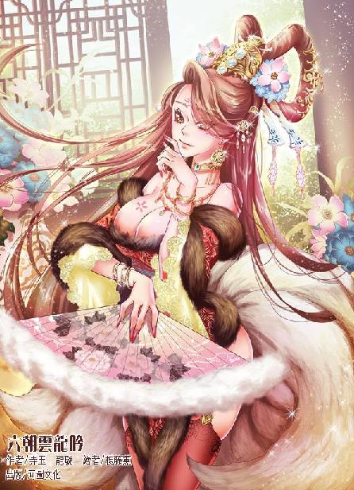

第68集·苍天已死
汉国篇（20/28）
出版日期：2017-03-07
【本集内容简介】
五方人马兵分三路潜入永安宫围捕吕雉，程宗扬在永安宫外围与小紫会合，继续推进。没想到，接近永安宫时，那枚识别狐族的琥珀灼灼发热。如果九面魔姬就是擅于幻化之术的狐族，那么深藏在永安宫里的那只狐狸究竟是胡夫人还是……吕雉本人？
程宗扬准备出手抓捕吕雉，却被吕雉身边的老太监阻拦。谁都不知道深宫中竟还藏着这名老怪物，一出手就打断了程宗扬的两根掌骨，但当老太监打伤小紫后，情势再次逆转……
※ ※ ※ ※ ※

封面人物：苏妲己（新版）
长秋宫前，临时张开的帷幕遮不住漫天飞雪，鹅绒般的雪花片片落下，沾在座中诸人的衣冠上。只不过此时没有人在乎这点雪，众人神态各异，目光不约而同地落在座中那个年轻人身上，眼中的意味更是耐人寻味。
杀死吕雉！彻底清除吕氏势力！
程宗扬的提议简单而直接。
刘建一方的使者对这个提议显示出极度的热情，甚至不等苍鹭开口，一直隐而不显的剑玉姬便直接表态，第一时间给予支持。
霍家一方则是避而不理，霍去病装聋作哑，摆明车马要置身事外，不愿意承担杀死太后的罪名。
金蜜镝没有开口，但拧紧的眉头已经表明他的态度。
不仅几方势力各有心思，连同处于一条船上的三位中常侍也态度迥异。徐璜脸色煞白，几乎控制不住身体的颤抖。唐衡双手抚膝，神情凝重，眼中的反对明显要多于赞同。单超紧闭着嘴巴，一言不发，眼中却多了一抹视死如归的决绝。
“今日之事便议到此处。”金蜜镝果断取消商议，起身道：“诸位各自回去整顿兵马，天明之后依策行事。”
金蜜镝选择略过程宗扬的提议，苍鹭却没打算轻易让步。他弹了弹衣襟上的雪花，淡然道：“以草民之见……程大行方才所言就颇有道理。”
赵充国凶神恶煞般叫道：“说的啥？我没听见！你小子再说一遍！”
苍鹭瞥了他一眼，木着脸没有作声。自己要敢重说一遍，立刻就会被这家伙抓住把柄，将谋弑太后的罪名扣在刘建头上——这种拙劣的伎俩，自己当然不会中计。
除了苍鹭，其他人都默契地没有再提诛杀吕雉的话头。众人各自散去，最后一个离开的是单超。他恭敬地向程宗扬施了一礼，躬身退到帐外。
帷幕内只剩下金蜜镝和程宗扬两人。
看着金蜜镝冷硬的神情，程宗扬肚子里大大地叹了一口气。所谓“亲贤臣、远小人”的道理自己当然知道，可知道归知道，只有亲身接触之后，才会发现，小人之所以是小人，正是因为他们那么容易亲近。就比如奸臣兄，即使自己说月亮是方的，他也能毫不犹豫地挽起袖子上场，力证月亮有几条棱几个角。而贤臣往往固守原则，不知变通，让人敬而远之，着实亲近不起来。
得了，自己也别跟他费舌了。他不是忠臣吗？皇后下一道诏书，比自己说一万句都好使。
程宗扬转身要走，金蜜镝却跨出一步，不偏不倚挡住他的去路。
程宗扬道：“金车骑为何拦我？”
“程大行要去何处？”
“金车骑应该明白，眼下的情形无论如何也拖不得。”程宗扬尝试作最后一次努力，至于能不能说服金蜜镝，自己就不抱任何指望了。
他抬起手掌，“千万别跟我提召董卓入京的事！行，我知道你们说的那位董破虏慷慨豪爽、勇而有谋、才武过人，有健侠之名，手下将士更是敢战精锐，足以平定逆贼——可是我胆小啊！引郡兵入京，这个险打死我都不敢冒！”
金蜜镝道：“你认为老夫的布阵，不足以攻灭吕氏残军？”
“真人面前不说假话，”程宗扬不客气地说道：“敢问金车骑，明日一战，你有多少胜算？”
金蜜镝沉声道：“我方有隶徒两千，羽林天军千余，江都建太子一方尚有三千余人。眼下长水军已经反正，吕巨君所领不过左武军第二军、射声军残部，能战者总计不及两千——以三敌一，明日一战，我方必败无疑。”
程宗扬怔了一下，才意识到他说的是必败，一时间不知道该如何接口。
金蜜镝道：“若只有羽林一军，明日即使以一敌二，金某也有七成胜算。加上董宣的两千隶徒，金某尚且有五成把握。但若加上刘建党羽，明日一战绝无胜机。”
老金这是明白人啊。眼下的局势，吕巨君所领的兵马并不可怕，但加上刘建一方这个拖后腿的，就变得险恶起来，人数越多，胜算反而越少。
“既然必败无疑，金车骑为何要拦我？”
金蜜镝道：“程大行欲往何处？”
程宗扬坦白地说道：“诛杀吕雉这么大的事，金车骑既然不同意，我只好禀报长秋宫，请皇后殿下定夺了。”
金蜜镝深深看了他一眼，“你想让殿下背负弑母之名吗？”
此言一出，程宗扬不由张口结舌。自己当然不是想往赵飞燕头上推卸责任，可这不是你老人家不同意，才逼得我搬出长秋宫吗？
程宗扬半是嘲讽地说道：“金车骑不会是要为太后肝脑涂地吧？”
“你以为金某是那种唯知尽忠的愚人？”
金蜜镝背负双手，微微昂起头，望着火光下巍峨的宫阙，“汉国民风勇烈刚健，朝野之间，忠贞之士比比皆是。单论忠义，原也轮不到金某这个异族之人名列辅政。吕氏所为，堪称国贼，诛灭吕氏，是为生民除恶，金某为何要反对？”
程宗扬如释重负地松了口气，笑道：“我就说嘛，金车骑怎么会是那种不知轻重缓急的庸人呢？既然金车骑也同意，我们就来商量商量怎么诛灭吕……”
“你错了。”金蜜镝打断他，“我说的是吕氏后族，而非太后。有些臣子为了替主上分忧，不惜去做种种脏活，甘愿背负骂名，以此自诩忠义无双——如此行径，不过是玩弄权术而已。须知天子行事，如日月行天，世人皆见，自当正大光明。何况我汉国以孝治天下，士子以孝廉入仕，天子谥号必以孝字为先。若将孝字弃若蔽履，无异于为图一时之快，而坏百世基业。其间得失，程大行尽可以不计较，但金某身为辅政，又岂能置之不理？”
程宗扬总算理解了金蜜镝的苦心，他不是愚于忠孝，而是作为辅政，必须要为汉国的长远考虑——问题是这关自己鸟事？
程宗扬索性道：“敢问金车骑，怎么光明正大地解决朝廷乱局，还不耽误为太后尽孝呢？”
“上太皇太后尊号，移居长信宫。”
程宗扬沉默半晌，金蜜镝的意思是给吕雉足够的尊荣，但必须让她离开权力中央。不过自己对此并不看好，先不说吕雉接不接受，即使她同意交出权力，可百足之虫，死而不僵，不彻底灭掉吕氏，天知道将来还会有什么幺蛾子？
看着金蜜镝的脸色，程宗扬知道这已经是他能够作出的最大让步了。
“可以。”程宗扬眼也不眨地答应下来，“下官这便去永安宫，恳请太后移宫。金车骑若是不放心，可以让赵长史随我一道。”
金蜜镝扬起头，望空道：“尊驾以为呢？”
空中一声轻笑，一个身影伴着雪花，宛如飞鸿般飘落下来。
剑玉姬穿着一袭雪白的长袍，整个人如同散发出淡淡的光芒，那条白袍式样简约到了极点，反而看上去有种出尘的神圣感。她的长发挽成一个椎髻，髻上戴着一支青玉簪子，簪身光华流动，一看就不是凡品。此时踏着白雪款款行来，整个人如同幻影一样，没有在雪地上留下丝毫痕迹。
“江都王邸宫人，见过车骑将军。”剑玉姬一边说，一边依着宫人礼数，侧身施了一礼。
金蜜镝望着她，良久道：“太平道？”
剑玉姬单掌竖在胸前，重新稽首施礼，“太平道大贤良师座下弟子，见过金车骑。”
“朝廷之事，尔等也敢插手，大贤良师不怕诛灭吗？”
剑玉姬不动声色，从容道：“我太平道唯以天下苍生为念，无暇谋身。”
程宗扬表情怪异，别人是狡兔三窟，这贱人却是一堆化身，居然又冒出来一个太平道的身份——汉国的太平道不会已经被她鸠占鹊巢了吧？
“车骑将军方才所言皆是正理，奴婢钦服不已。”剑玉姬道：“只是长信宫远在上林，如今天寒路滑，车驾难行。依奴婢之见，当诏命洛都令，征发徭役，以黄土筑路，以免延误太后凤驾。”
金蜜镝道：“筑路之事，请建太子赴长秋宫自禀。”
剑玉姬说的筑路只是试探，要紧的是以谁的名义下诏，让洛都令征发民夫。金蜜镝要是稍有疏漏，一不留神答应下来，刘建转头就敢以天子的名义下诏，再堂而皇之地宣称得到金车骑的支持。但金蜜镝岂会轻易入套，他寸步不让，让刘建亲自到长秋宫觐见禀报，逼其以臣下自居。
眼下不是撕破脸的时候，剑玉姬投石问路，一击不中，也不再纠缠，慢条斯理地说道：“请太后移宫之事，关乎社稷，想来金车骑也不欲惊动太多人，招惹物议。金车骑若是同意，程大行、赵长史以外，我方也去三人。”
程宗扬心下一动，眼下几方势力，就数刘建的党羽人马最多，尤其又莫名其妙地蹦出来一个太平道，令人摸不清深浅。眼下她主动提出限制人数，自己求之不得，当即说道：“那好，每方出三人，加上我这个带队的，一共十人。”
剑玉姬道：“金车骑觉得呢？”
雪花落在剑玉姬的身影上，随即消失不见。金蜜镝知道眼前只是个虚影，不愿多费口舌，只略一点头，应许下来。
剑玉姬轻笑道：“十人也不算少了，一道去的话，只怕惊扰了太后，不如分道而行。”
※ ※ ※ ※ ※
“一共十人？”秦桧问道。
程宗扬点了点头，“那贱人要求分成三组。长秋宫去的是单超，金霍一方去的是赵充国和冯子都，那贱人只说他们收买了一名永安宫内侍，其他两人没提。我们这边你和卢五哥肯定是要去的，还剩下一人——四哥呢？”
“斯爷神龙见首不见尾，”秦桧道：“眼下多半在凉风殿。”
吕巨君已经是瓮中之鳖，盯紧刘建才是正事。有斯明信盯着，自己能放一百二十个心。程宗扬想了想，“卓教御呢？”
秦桧道：“尚在宅中，此时相召，只怕要半个时辰才能到。”
自己手边的人马大都投入宫中，再把卓云君召来，老巢就彻底空虚了。剩下的人手里面，吴三桂是阵前猛将，入宫行刺这种事非其所长。王孟也是一样，而且长秋宫同样需要人坐镇。至于蔡敬仲，自己一想起蔡爷，就心头发慌，头皮发麻，都快落了心病了。刺杀太后这种大事，自己带着蔡爷这种行为完全无法预测的妖人，到底是找虐呢？还是找虐呢？
“让蒋安世去。”程宗扬拍板道：“三组人分成三路，分别走东、北、南三路，在永安殿会合。剑玉姬要了东边一路，由永安宫那名内侍带领。你看怎么安排分组合适？”
秦桧心念电转，这十人分属三方、甚至五方势力，如何分组可以说关系到整局成败，大意不得。
片刻间，秦桧厘清头绪，说道：“东边一组出于剑玉姬的安排，必须有强力人物坐镇，此人非卢五爷莫属，再加上赵充国，定可万无一失。单常侍熟稔宫中道路，可以独领一组，依属下之见，不妨由他走北路，再辅以蒋安世。这两人都是信得过的，剑玉姬那边无论去的是谁，都难以搅起风浪。”
程宗扬想了想，“永安殿位于北宫东北角，剑玉姬占了东路，单超和蒋安世走北路，我们选南路的话，要穿过大半个宫城，似乎有点太远了。”
秦桧提醒道：“主公莫非忘了复道了吗？”
程宗扬一拍额头，要不是秦奸臣提醒，自己真把这事忘得干干净净！
“吕巨君和刘建都是饭桶啊！怎么都忘了两宫之间的复道？！”
“并非两人的疏漏。”秦桧道：“当初吕淑的卫尉军撤退时，在复道内堆积了大量木柴、灯油等物。整座复道都架在空中，通体木制，一旦纵火根本无处可逃。刘建军不敢借复道进攻，不过他们也如法炮制，在复道另一端同样堆积大量木柴和灯油，派人看守。眼下双方投鼠忌器，谁也不敢拿这条复道作文章。”
“戒备很严吗？”
秦桧道：“两宫之间的复道长近七里，吕氏和刘建的手下都只敢待在复道两端，中间全是空的。”
“中间没有人？”
“一个人都没有。”秦桧道：“尤其是夜间通行须用灯火，更无人敢进。”
深更半夜，举着火把钻进泼满灯油的木制建筑里面，压根儿就是找死，难怪没人敢进。程宗扬奇道：“你怎么知道得这么清楚？”
秦桧咳了一声，“属下原本准备派几个人过去，看有没有机会好替他们放把火。”
程宗扬忍不住狠狠给他竖了个大拇指。煽风点火这种事干一回两回不难，难的是时时刻刻都操着煽风点火的心思。真不愧是奸臣兄，周到人啊。
程宗扬心思活络起来，这条复道用来通行大军肯定是不行的，但如果只是几名高手，这条复道就是一条难得的捷径。
“那我们就选南路，走复道。你、我再加上冯子都，剩下一个不管剑玉姬派谁来，是龙是虎都得给我盘着！”
程宗扬定下方案，这才道：“蔡爷呢？”
秦桧有些尴尬地说道：“蔡常侍不小心被火烧了一下，眼下正在调养。”
“什么？”程宗扬怔了一下，然后捧腹大笑，“哎呀，蔡爷也有今天啊。玩火者必自焚，真是老天有眼，大快人心啊。”
※ ※ ※ ※ ※
程宗扬的好心情只维持了不到一刻钟，在见到剑玉姬派来的人手之后，立刻化为乌有。
“怎么是你？”
齐羽仙讶然道：“不行吗？”
“你们是不是没人了？整天都是你这娘儿们在外面瞎跑，有加班费吗？”
“公子商会的待遇很优厚吗？”
“咦？有兴趣跳槽到我们这边吗？绝对待遇从优啊！不但管吃管住，而且管婚配。”程宗扬恶意满满地说道：“我们商会全是精壮汉子，包你满意！”
齐羽仙笑吟吟道：“公子好像也尚未成亲呢，说来你未婚我未嫁……”
“少胡扯！”程宗扬义正辞严地说道：“我可是有主的！”
寅时四刻，正是一天最黑暗的时候。置身复道之中，即使以程宗扬的目力，伸出手来也看不到五指。一行四人只能在黑暗中摸索前行。
冯子都心里有些纠结。临行之前，霍少特意叮嘱过，自己既然参与此事，唯一要做的，就是保住太后的性命。金车骑的态度与霍少大同小异，可以请太后移宫，收其印绶，但绝不能伤及太后的性命。问题是程大行的态度。路上程大行给了他一颗手雷，交待他就对着太后丢——摆明了要取太后的性命。平心而论，他也觉得程大行的主意不错，假若能搞定太后，不说别的，单是羽林天军的兄弟们就能少流多少血。但自己作为大将军的家奴，必须要站在大将军的立场上考虑。
冯子都正想着心事，忽然脚下一滑，跪倒在地，膝盖像是被尖刀刺中一样，一阵剧痛。
冯子都死死咬住牙关，鼻中却忍不住发出一声痛哼。
“当心。”秦桧低声说道，一边扶起冯子都，袍袖拖在地上，微微一滞，像是沾到了什么东西。
“灯油。”秦桧说着袍袖一卷，地面传来一片细碎的碰撞声，仿佛撒满了碎瓷。
“走上面。”程宗扬说着跃起身，结果手刚攀上横梁便滑了下来，反沾得满手是油。
齐羽仙嗤笑一声，亮出掌心一颗珠子。
程宗扬一边擦着手上的油，一边没好气地说道：“有照亮的，你还不早点拿出来？看我的笑话很爽吗？”
“岂敢？只是怕公子眼红罢了。”
“就一颗破珠子还当宝贝了？你当我没见过世面？”程宗扬腹诽道：要不是大爷没带应急手电筒，非亮瞎你的狗眼不可！
淡淡的珠辉下，只见木制的楼板上满是陶瓮的碎片，复道内像是被灯油洗过一样，从横梁到楼板都油汪汪一片。而且地板上还插着箭镞和三角锥，防止大军通过。
冯子都膝盖被箭镞刺伤，虽然没有见骨，但也难以再跟随行动。无奈之下，程宗扬只好让他先行回去。
出师不利，刚开始行动就先折损一人，让程宗扬对此行有种不祥的预感。
秦桧道：“此处是复道中段，再往前就好走了。”
程宗扬点点头，三人绕开遍布的碎陶、箭镞，继续往北宫行去。
复道北端已经深入北宫，尽头处驻守着一队军士。他们此时都猥集在一处，周围插满了火把。在他们身前的复道内堆着大捆大捆的稻草，上面浸满了灯油。一旦有警，一伸手就能放火烧毁复道。
这点人手自然挡不住三人，程宗扬等人远远躲开火光，从窗口穿出复道，攀在檐下，轻轻松松就避开守军的视线。
程宗扬留心看去，那些军士一个个面带惊惶，真要有人杀过来，很可能放火之后就一哄而散。北宫军中士气如此低落，倒是一个好消息。
东路和北路都有识途老马带路，南路这边原本冯子都在北宫当过值，说好由他领路，结果冯子都受伤退出，来过一趟的程宗扬只好赶鸭子上架，领着两人穿过重重宫室，赶往永安宫。
与血战不休的南宫相比，北宫安静得令人发指，整个北宫仿佛空无一人，绝无半点声息。秦桧神色平淡，心底却提起十二分的戒备。以他的神识，能感应出各处宫室都聚集着大量宫人，数量之多绝不下于南宫，然则大乱之际，却没有一个人乱说乱动，单是这分严整肃然，就能看出太后的手腕。
远处一座高大的门楼，在黑暗中显出宏伟的轮廓。按照方位，应该是通往永安宫的云龙门。只是此时门洞大开，门前同样看不到一个人影。
“情形不对。”秦桧低声说道。
程宗扬也觉出不对。吕雉规矩再严，也不可能把人全赶到室内，外面不留任何戒备。尤其是这座通往永安宫的门户，就这么大开着，怎么看都是陷阱。
齐羽仙道：“求我。”
“求你个鸟！”程宗扬没好气地说道：“大不了我回去睡觉，大伙儿一拍两散，谁也别想捞着好。”
“真是不解风情呢。”齐羽仙轻声叹息着，然后屈指一弹。
“嘎”的一声，夜空中传来一声鸦鸣。一只离巢的乌鸦盘旋着飞来，靠近云龙门的刹那，空气中仿佛浮现出一抹微光，接着一道寒光闪电般射出。那只乌鸦来不及惊叫，便看到空中血花四溅，黑色的羽毛四处纷飞。
程宗扬倒抽一口凉气，他猜测过宫中很可能布有禁制，但这座禁制未免太庞大了。从刚刚浮现的轮廓推断，很可能从云龙门直到永安宫都被禁制笼罩。通常的禁制法术范围不过一室之地，大的也顶多笼罩一个院子，可眼前这座禁制，直径起码有三里，这还怎么玩？
“绝不会有这么大的禁制，”秦桧一边计算距离，一边推断道：“应该是六个禁制排成一周，呈六出雪花之状。”
齐羽仙看了他一眼，“秦先生对这些法术也了如指掌呢。”
“略知一二。”秦桧谦逊地说道：“不比贵宗，精擅此道。”
齐羽仙吹了声口哨。不多时，殿后飞来一片鸦群，它们分散开来，三三两两往永安宫方向飞去，有些刚靠近云龙门就被突如其来的寒光射杀，有些却飞过云龙门，一直飞到永安宫附近才猛然堕下。
“你这个蠢货！”程宗扬毫不客气地呵斥道：“死这一地乌鸦，傻子也知道不对。”
“公子一点都不知道怜香惜玉呢，大家还能不能愉快地合作了？”
“算了，这次就原谅你了。去，到前面带路。”
齐羽仙转身就走。
“喂，你往哪儿去啊？真不玩了？”
“公子不是让奴家带路吗？这边走喽。”
齐羽仙绕了一个大圈，一直绕到西边一座高楼旁，才停下脚步。
程宗扬看了看地形，“大嫂，你迷路了吧？再往西都到白虎门了。”
齐羽仙闪身进入楼内，片刻后推开一扇小门，露出一条通往地下的暗道。她转过身来，微笑道：“公子以为，我们在汉国这么多年，都是白待的吗？”
程宗扬警惕地往暗道看了一眼，“你想阴我？”
齐羽仙翻了个白眼，当先踏入暗道。
暗道中散发着潮湿的霉味，脚下的石板不少地方都长着苔藓，稍不小心脚下便是一滑。程宗扬留心看去，暗道中虽然有一些行走的痕迹，但看上去已经有些时间。
“这条暗道尽头是朔平署，并不通往永安宫，只不过能绕开大半的禁制。天子亲政之后，朔平署已经废弃，眼下算是北宫最安全的地方。”
齐羽仙一手托着明珠，一边在前领路，一边说道：“公子何须这么小心？要知道如今大家同舟共济，哪里就先闹起来了呢？”
说着她停下脚步，转过身，笑吟吟看着他，“公子，你说是吧？”
程宗扬面沉似水，一颗心直掉到冰窟窿里，头皮阵阵发麻。
眼前是两条暗道交汇形成的一小处空间，丫字形的暗道两端，隐隐现出几道人影。左边两人，一男一女，是曾在洛水与自己交过手的斗木獬和危月燕。右边同样是一男一女，男的穿着一身雪白的僧袍，面目俊俏，神情妖异，正是昔日伤在自己手下的壁水貐。他旁边却是一名小女孩，是那位打过数次交道的小玲儿。
程宗扬深深吸了一口气，“原来你们早就准备好了。”
“可不是吗？”齐羽仙轻声笑道：“所谓英雄所见略同，公子与我们仙姬想到一块儿去了呢。”
妈的！程宗扬心里痛骂一声，千算万算，到头来还是被那贱人阴了。剑玉姬那贱人早就准备要刺杀吕雉，甚至已经把龙宸的杀手都布置到了北宫之内。结果自己好死不死，也提出刺杀吕雉，这下正中那贱人下怀，先是一个顺水推舟，全力附和自己的提议，接着来个请君入瓮，把用来对付吕雉的杀局先用到了自己身上，难怪她又是限制人数，又是出主意分道而进，全都是为了诓自己上套。
※ ※ ※ ※ ※
程宗扬拔出佩刀，“五个人？少了点吧？”
齐羽仙抬起一只手掌，正容道：“公子若是束手就擒，我齐羽仙以魔尊之名起誓，绝不伤公子性命。”
程宗扬冷着脸道：“你们要是束手就擒，我也发誓，绝不动你一根阴毛。”
“公子何必拒人于千里之外呢？”齐羽仙叹道：“我们仙姬对公子可是绝无半点恶意。”
“别废话了，你们要不怕崩了牙，就上来吧！”
程宗扬举刀指着齐羽仙，一边说一边一手伸到背后，拼命给秦桧打手势。
眼前的暗道总共三个出口，两个被人挡住，只有入口这一端毫无动静，但程宗扬敢肯定，自己走进暗道的一刹那，后路已经被人断掉。
既然退不得，只有往前。两厢比较，壁水貐当初在洛水重伤过，眼下虽然看不出来受过伤，但肯定没那么容易痊愈。另一个小玲儿擅长土遁、暗杀，硬碰硬的话，未必就强过另一边的斗木獬和危月燕。最恶心的是齐羽仙，这贱人故意站在中间，自己无论选哪边突破，她立刻就能上前策应。
“都别动！”秦桧一声厉喝，从袖中擎出一只拳头大的铁罐。
“这是君侯特制的五煞天雷！”秦桧将铁罐高高举起，叫道：“只要秦某一丢手，足够把这条暗道炸上天去！大伙全都死个干净！”
“长得帅的男人果然会骗人。”齐羽仙冷笑道：“这种手雷奴家又不是未曾见过，哪里能把暗道炸上天去？”
“别忘了，”秦桧森然道：“这可是君侯所制！”
“除非它能大上十倍，否则便是殇侯所制，也不可能用它把我们这些人全都炸死。”
“哈哈，果然骗不过你。”秦桧爽朗地一笑，随手把铁罐一丢，然后从怀中取出一只瓷瓶，一把捏碎，弹出一颗药丸，落在程宗扬手中，低声道：“含在口中。”
“不好！”危月燕一声惊呼，扬手挥出一幅罗帕，朝那颗五煞天雷罩去。
可惜她晚了一步，那只铁罐没有爆炸，而是冒出一股黑紫色的烟雾，在狭窄的暗道中迅速弥漫开来。
几乎是同一时间，暗道风声大作，斗木獬、危月燕、壁水貐、小玲儿、齐羽仙同时出手。
“咄！”程宗扬舌绽春雷，接着双刀齐出，一招虎战八方，将众人的攻势尽数接下。
“退后！”齐羽仙叫道：“守住通道！别让他们闯出去！”
“晚了！”
程宗扬身形一闪，硬闯进右边的暗道中，接着丹田真气狂涌，双刀奔雷般朝壁水貐斩去。
壁水貐挥起那柄血红的长刀，挡在胸前。双刀相交，他怪叫一声，踉跄着向后退去，一边吐出一口鲜血，将胸前雪白的僧衣染得一片殷红。
程宗扬一刀试出壁水貐的深浅，知道他伤势未愈，顿时心头大定，刀光随即一转，往小玲儿颈中斩去。
程宗扬这一刀几乎拼尽全力，刀身上的白光仿佛要迸射出来。小玲儿惊叫一声，连忙往后退了一步，靠在洞壁潮湿的泥土上，然后就像脱壳的金蝉一样，消失无踪。
程宗扬旋风般直闯过去，背后的秦桧十指连弹，犹如狂风暴雨般点在齐羽仙弯刀上，将她逼退，紧跟着主公的后尘掠入暗道。
壁水貐死命压下伤势，拔足追赶。他紧紧握住血刀，恨不得将两人一刀砍成四段。
另一边的斗木獬和危月燕齐齐扑上，一个擎出两柄短戟，一个则抖出软索，贴着地面往秦桧腿上缠去。
秦桧足尖一点，轻松躲开软索。
壁水貐紧盯着前面的背影，俊俏的面孔几乎扭曲。那名中年文士速度似乎并不快，身法也只是平平，看不出有什么高明之处。要是换作自己没受伤的时候，轻松就能把他追上斩杀。即使现在有伤在身，但只要加一把劲，快上那么一点点，就能追上他。先一刀把他拦腰砍成两段，然后趁他还有气，一刀一刀砍掉他的手脚，最后再砍掉他的脑袋……可惜总差那么一点……
壁水貐正心里发狠，前面的背影忽然一顿，那文士转过身，笑道：“看你这么辛苦，赏你了。”
壁水貐来不及止步，就看到他拿出一只黑黝黝的铁罐，塞到自己怀中。
壁水貐一边吐血，一边慌忙把铁罐抛开，拼命后退，结果把赶来的齐羽仙、斗木獬和危月燕都挡在身后。
众人齐齐止步，各自戒备。谁知那只铁罐掉在地上，半晌没有动静。
良久，斗木獬上前踢了一脚，铁罐在地上滚了几滚，依然动静全无。
“假的。”
齐羽仙面冷如冰，忽然抬手给了小玲儿一记耳光，厉声道：“贱人！”
小玲儿委屈地捂住脸，“我又打不过他……”
齐羽仙一把扯掉她颈中的银链，然后弯下腰，粉面几乎贴在她的鼻尖上，一手提着银链，冷冷道：“再有下次——你知道会有什么后果。”
小玲儿脸色慢慢发白，无声地点了点头。
“快走！”危月燕道：“烟里有剧毒！”
众人回头看时，身后的暗道已经充满紫黑色的烟雾，空气中弥漫着一股甜丝丝的香气。
齐羽仙道：“是殇老贼的鬼瘴！屏住呼吸，闯过去！”
斗木獬叫道：“回去？为什么不追？”
“他们若是在另一端再放一只鬼瘴，你以为自己能撑多久？”齐羽仙停顿了一下，然后道：“况且他们去的方向，无关大局，眼下先去永安宫要紧，且让他们留一条命。”
※ ※ ※ ※ ※
程宗扬奋力掷出佩刀，将甬道尽头的木盖击碎，接着又是一刀掷出，防备有人躲在外面。
这一招果然奏效，木盖刚被击碎，一柄银戟就捅了进来。如果程宗扬是砍碎木盖杀出去，猝不及防下，少不得一阵手忙脚乱。结果程宗扬脱手两刀，外面那人银戟刺空，随即被飞来的第二刀劈中，发出一声惨叫。
秦桧飞身上前，一把抓住银戟，拧腕夺下，然后贴着洞口扫了一圈。
等程宗扬跃上地面，只见一个人倒在血泊中，他穿着内侍的服色，一条手臂被齐肘斩断，连腰腹都被刀锋斩中，血如泉涌，脚踝更是被秦桧那记横扫击得粉碎，此时躺在地上，四肢不停扭动。那柄银戟掉在一边，看上去光彩闪亮，是宫中常用的制式。
秦桧一手按住那人的嘴巴，免得他的惨叫声惊动他人，一边出指如风，封住他身上数处要穴。
程宗扬环视一周，只见眼前是一间斗室，室角胡乱扔着一堆宫中器具，似乎是一处杂物间。
他捡起刀，走到窗外往外看了一眼，不由一愣。
外面是一座偌大的宫殿，空荡荡的殿中点着几盏油灯，似乎是怕失火，不仅相隔极远，而且只有豆大一点光焰，与宫中常见的青铜灯树截然不同。借着微弱的灯光，隐约能看到一排……大门？
这可实在太蹊跷了，自己还从未见过殿内设门的，而且还是一扇连着一扇，一眼望过去，看不到尽头的样子。
秦桧吐出那颗解毒丸，然后轻轻捏开，从中挑出一粒粟米大小的红珠，张口服下，一边解释道：“这颗解毒丸能克制鬼瘴在内的多种毒物，但本身也含有剧毒，必须在一刻钟内服下其中的赤珠才能化解。”
程宗扬吓了一跳，赶紧依样挑出赤珠吞下，抱怨道：“连解毒药都含毒，老东西也太黑了吧？”
这话秦桧没法接，他咳了一声，然后道：“属下已经问明，方才那人是此地内侍，也是太平道信徒，说是奉教中渠帅之命，把守暗道。我们出来时既没有示警，也没有说出口令，因此试图拦截。”
“居然还有口令？”程宗扬问道：“什么口令？”
秦桧惭愧地说道：“属下无能，那人伤势太重，属下只问出半句，他便咽气了。”
“哪半句？”
“苍天已死。”
程宗扬七情上脸，半晌才吐出一个字：“干！”
他终于明白过来，刘骜死得一点都不冤！
苍天已死，黄天当立。岁在甲子，天下大吉——问题是今年就是甲子年！即使吕冀没有动手弑君，最多一个月内，刘建也会动手，干掉苍天，自己过一把天子的瘾。难怪刘建动作这么快，转眼就纠集一大票人马出来，原来他早就准备好要造反，这才能赶在天子刚一驾崩的时机，立即发动。眼下天子驾崩，只是让他把动手的时间提前了，而且更加师出有名。
吕氏诸人一手炮制了天子驾崩的戏码，从深宫弑君，到暗中调左武第二军入京，布局不可谓不周密。可他们无论如何也想不到，自己所面对的是一伙同样处心积虑的野心家，甚至处置局面的精细犹在他们之上。从趁乱抢夺玉玺虎符，到截杀吕让、吕忠，一路翻云覆雨，硬生生将吕氏稳赢的局面搅得七零八落。
这不是螳螂捕蝉、黄雀在后，而是两只螳螂狭路相逢，各自磨刀霍霍，要独吞刘骜那只死蝉，而最终的赢家只能有一个。相比之下，自己卷进此事，完全是倒霉催的，要多无辜有多无辜。
秦桧已经将暗道出口封住，毒烟消散前，不虞有人杀出。自己这一路已然吃了大亏，东路情形想来也不妙，毕竟是剑玉姬一方的人领路，不设上七八十来个圈套，简直对不起剑玉姬那贱人卑劣的人性。不过东路有卢五哥，一般的圈套还真套不住他。相对而言，单超所在的北路危险性更大一些。
眼下要退回去已经来不及了，剑玉姬已经在北宫布局停当，随时都可能攻入永安宫。她要真动手杀死吕雉，自己还不算太担心，最可怕的是吕雉没死，而是被剑玉姬挟持，到时刘建一手抓住玉玺虎符，一手抓住太后，这个天子之位就算彻底坐稳了，即使长秋宫有金蜜镝支持，也翻不出什么浪花来。
进还有一线生机，退则万事俱休。怎么选择也不用多想。
“此地不可久留。”秦桧道：“还是尽早离开为上。”
“稍等片刻。”程宗扬望着窗外那排雕刻精美的大门，皱眉道：“这地方似乎有些古怪。”
秦桧侧身贴在门上，仔细听了片刻。
“我先来！你断后！”程宗扬将佩刀贴在肘后，推开门，借着油灯昏暗的光线，往那排高大的宫门走去。他神情越来越疑惑，离宫门还有数步，他忽然停下脚步，然后抬起头，倒抽了一口凉气。
直到此处程宗扬才发现，这根本不是什么宫门，而是一排巨大的木橱。这些橱柜高达两丈，上端几乎与大殿的横梁平齐，一座连着一座，一直延伸到视线尽头。紧闭的橱门挂着金锁，由于规格过于庞大，使他生出错觉，误以为是宫门。
“锵”的一声轻响，长刀破开金锁。
程宗扬拉开一扇橱门，眼前不由一花。木橱中是数不清的格子，一格一格摆满各式各样的珍宝。各种水晶、玛瑙、珍珠、翡翠、象牙……琳琅满目，即使黑暗中，仍然闪动着诱人的光泽。
程宗扬打开另外一扇橱门，里面是雕琢精美的玉碗，从上到下不知有多少。再打开一扇，里面全是珍贵的香料。每个格子里，都挂着一支竹简，上面写着某年某月某地所贡，然后是具体数量。
以程宗扬如今的见识，陡然见到如此之多的宝物，也不禁犯晕。他仰起头，带着不可思议的表情往上看去。高达两丈的木橱里面，一层一层盛满了累世收藏的宫廷贡品，数量之大，足以撑爆任何一个珠宝商人的眼球。
秦奸臣这会儿也有些愣眼，如此多的珍藏，数量太过骇人。不过换一个角度来想，以汉国的国力，每年各地州府进献的贡品都差不多能装满一只木橱，累年积累下来，这样的数量也在情理之中——别忘了被刘建放火烧掉的武库，单是兵甲就有百万之巨！
两人都被眼前海量的珍宝震住，一时间默然无语。
忽然，一个牛皮哄哄的声音从殿后传来：“这里就是增喜观！里头都是些不值钱的小玩意儿。看中什么，尽管拿！别跟大爷客气！”
程宗扬张开嘴巴，目瞪口呆地望着殿后。
一个穿着破袄的老东西，脏得跟刚从地里刨出来的一样，此时正背着手，一副趾高气昂的模样走过来，下巴一撮山羊胡都快扬到天上了。可他脚上那双破鞋烂得都快没边了，只能拿脚趾夹着，走得踢踢拉拉。
在他旁边，一个少女抱着一条雪白的小狗，就像一个午夜出现的精灵一样，轻盈地走来。她长发垂在颊侧，一双乌黑的眸子光泽流动，精致的面孔犹如珠玉般散发着迷人的光彩，满殿珍宝与她的姿容一比，都不禁黯然失色。
少女翘起唇角，像唱歌一样脆生生道：“说得好像都是你的一样呢。”
“那可不是？”朱老头吹着胡子道：“这些玩意儿本来就是大爷的！”
“吹牛。”
“嘿！紫丫头，连大爷的话你都不信？”朱老头拉开一扇橱门，口沫横飞地说道：“瞧这玉瓶！美不美？上好的羊脂白玉！你瞧这雕工！每片树叶都清清楚楚！还有这头发，一根一根刻得这细啊……”
忽然，那只小白狗从小紫怀里奋力挣出，钻进木橱里面。只见它尾巴一摇，一只羊脂玉瓶从橱中滚落，“咣啷”一声，在地上跌得粉碎。
“咣、咣”声不绝于耳，那小贱狗就跟炮弹一样，一溜烟撞翻了一排玉瓶，直冲到一只玉盆旁边，这才欢快地凑过去，然后翘起一条小短腿，“哗哗”地尿了起来。
朱老头下巴差点儿掉在地上，这一排十好几个羊脂玉瓶，被这死狗一泡尿全给毁了——这泡尿得有多金贵啊？
小紫眉花眼笑，“雪雪最乖了，知道不能随地便溺呢。”
小贱狗“汪”地叫了一声，得意地摇着小尾巴。
“哎哟！”朱老头一手捂住胸口，用力捶了几下，一脸的痛心疾首。
小紫撇了撇嘴，“几个瓶子都舍不得，还说都是你的呢。”
朱老头脸颊抽搐了几下，最后一甩破袖，豪气干云地挥手道：“随便砸！这破瓶大爷有的是！”
雪雪一泡尿尿完，浑身轻松地跳回女主人怀里。小紫摸着它白绒绒的软毛，一边游目四顾。
朱老头走到一座有年头的木橱前，笃定地说道：“就在这儿了！”
老头扭开金锁，一格一格找下来，本来自信满满的表情逐渐变得迟疑。等最后一格找完，老头眨巴眨巴眼睛，只剩下一脸茫然。
“瞧我这记性！”朱老头一拍脑袋，哈哈笑道：“这个！这个！”
朱老头拉开旁边一座木橱，半个身子都趴到里面，卖力地一通乱扒。他越扒越是心虚，嘴里嘀嘀咕咕道：“就在这儿啊……咋会没有了？”
“哪儿去了这是……”
“这个！诶……不对，不对……”
雪雪在小紫怀里翻了个身，蜷起四条小短腿，露出小肚皮扭来扭去，一边谄媚地吐着小舌头，使劲撒娇卖萌，讨女主人开心。
忽然间，一只手伸来，揪住它的耳朵一扯，然后劈手扔了出去。接着一双手臂紧紧抱住小紫，咬牙切齿地说道：“死丫头！”
小紫没有半点慌张，好像就知道他会在这里一样。她舒服地偏了偏头，把脸贴在程宗扬胸口，一边闻着他身上熟悉的味道，一边半闭着眼睛道：“有罂奴的味道，蛇奴的味道，兰奴的味道……咦？你跟人动手了？”
程宗扬点了点头。
“你不是不愿意暴露那个吗？”
自己担心引来是非，一直隐藏九阳神功，直到在昭阳宫外，用师帅传授的功法，斩杀了古格尔。
“遇到一个必须要杀的仇人。”
“哦。”
程宗扬低头看着小紫，“你怎么跑到这里了！”
“来找东西啊。”
这边朱老头也露出脑袋，他刚才的笃定一扫而空，这会儿一边心虚地搓着双手，一边凑过来，亲热地说道：“小程子，你也来了啊？想大爷没有？”
程宗扬笑道：“想你大爷！”
朱老头的脸皮早已厚到无形的境界，直接把这话当成赞美，乐呵呵道：“我就知道你跟大爷亲！”
程宗扬对小紫道：“来找什么？你不是去参拜魔尊了吗？参拜了吗？”
小紫皱了皱鼻子，“你问他好了。”
朱老头一张老脸立刻皱得跟苦瓜一样。
“这事可不能赖我啊。”朱老头先开口叫屈，然后抱怨道：“我那师兄虽然是个不要脸的老泼皮无赖，可以前不这样啊。”
“没见着？”程宗扬不以为意地说道：“没见着就没见着吧，有什么大不了的。”
“可不能这么说。”朱老头少见地严肃起来，“不拜魔尊，不得列入宗门。这是规矩。”
程宗扬听着纳闷，“他们干嘛死拦着，不让紫丫头参拜魔尊呢？”
“怕了呗。紫丫头要是入了宗门，哪儿还有他们混的？”朱老头道：“你不是怕那个啥玉姬的，怕得要死吗？”
“谁怕得要死！”
朱老头没理会他的辩解，“紫丫头要是入了宗门，让她撅着她就不敢盘着，让她卧着她就不敢蜷着。”
程宗扬嗤之以鼻，“我怎么没见她对你这么老实呢？”
“啊呸！紫丫头是大爷能比的吗？紫丫头只要入门，将来一统宗门，不在话下！”朱老头涎着脸对小紫道：“我看好你呦。”
小紫翻了个白眼。
程宗扬道：“所以你们又白跑了一趟？”
朱老头像霜打的茄子一样蔫了下来。
小紫嘟着嘴道：“还是上次杀得太少了，把他们全部杀光光就好了。”
朱老头竖起大拇指，“通透！”
小紫口气虽然轻淡，作为最熟悉她的男人，程宗扬听出来死丫头是真恼了。被人三番五次地戏耍，单是巫宗这种态度，就必须全都死一死。
“要杀光他们，眼下就有个机会。”程宗扬对小紫控诉道：“我刚被她们坑过！”
秦桧适时地上前施礼，“君侯，紫姑娘，事情是这样的……”
奸臣兄口齿流利，三言两语，就将事情经过说得明明白白。
听过原委，朱老头道：“小程子，你跑错路了嘛。这增喜观和朔平署一南一北，隔着好几里，跟永安宫更是隔了半座宫城呢。”
程宗扬笑道：“幸好跑错了路，哈哈哈哈。”说着忍不住开怀大笑。
忽然脚踝一疼，程宗扬低头一看，那条小贱狗正咬着他的脚脖子拼命使劲。程宗扬本来想把它一脚踹飞，接着又改了主意，恶狠狠道：“再不老实——我就找条黑獒跟你配种！”
雪雪呆了片刻，然后夹住尾巴，一溜烟窜到小紫背后，再也不敢露头。
※ ※ ※ ※ ※
确定了方位之后，朱老头带路，一行四人杀往朔平署——巫宗势力早已渗透入宫，如今空置的朔平署很可能是他们的据点。朱老头的意思是反正顺路，大家都听紫丫头的，先杀几个再说。
但刚过温德殿，众人便发现情形不对。殿后白茫茫的雪地上多了许多杂乱的脚印，不时还有血迹出现。
秦桧用手指蘸了蘸血痕，“是新血，应该不到一刻钟。”
再走不远，雪地上出现了几具尸首，有穿着黑衣的内侍，也有带甲的军士，甚至还有一名戴着面具的吕氏死士。
忽然眼前出现一个熟悉的身影，程宗扬心里“咯噔”一声，脸色变得极为难看。
倒在地上的是蒋安世，他胸腹中了数刀，此时还睁着眼睛，但气息已绝。
程宗扬半跪在地上，一手托起他的脖颈。蒋安世身体还没有僵硬，但皮肤已经冰冷。程宗扬默然片刻，然后伸手帮他合上双眼。
秦桧上前接过尸身，“先找个地方收敛好，回头再风光大葬。”
程宗扬低声道：“都是我的错。”
如果不是自己错信了剑玉姬那贱人，蒋安世也不会出事，死在这深宫之中。
秦桧劝慰道：“人死不能复生，还请主公节哀。”
小紫忽然道：“那边有声音。”
程宗扬起身往声音来处掠去。不多时，眼前出现一幢小楼，十余人散成一个圈子，将小楼团团围住。为首一名内侍阴声细气地说道：“识时务者为俊杰。单常侍，依咱家说，你还是尽早弃暗投明，及时归顺……”
楼内一片死寂。
“想当年，咱们一道在宫里当值……”那名内侍一边攀着交情，一边悄悄挥手。
两名军士暗暗靠近小楼，然后挺矛冲进门内。黑暗中蓦然伸出一双手掌，握住矛身一拉一送，矛尾重重击在两人胸前的皮甲上，将两名军士撞得横飞出去。
后面一名戴着铁面具的死士闪身而入，挥刀朝那双手腕绞去。
单超化掌为拳，一拳击出，就像铁锤一样击在刀身中央，将那柄长刀砸得弯折过来。那名死士单刀脱手，踉跄退了几步，接着机括声响，从他腰间射出一蓬乌黑的透骨钉，夺命毒蜂一样飞入门内。
“笃、笃、笃……”
单超拽过一条长几，将那些透骨钉尽数挡下，随即往外一抡。钉满毒钉的长几旋转着从门中飞出，将一名躲闪不及的内侍砸翻在地。
“好胆！”为首的内侍尖叫道：“杀！杀！杀！杀了这逆贼！”
叫了半晌，却不见动静，那内侍疑惑地扭过头，只见自己身后的手下不知何时已经倒在地上，不知生死。一名风雅的文士微笑着走过来，“有劳尊驾，永安宫怎么走？”
那内侍还想反抗，被秦桧一指点在颈侧，顿时浑身酸麻，直挺挺跪了下来。
围在小楼另一侧的诸人一阵骚动，几名内侍挥刀舞棒地杀过来，剩下一名卫尉军却是转身就跑。
程宗扬脸色冷厉，双刀发出虎啸般的刀鸣，犹如虎入羊群，转眼将几名内侍斩杀当场。
那名卫尉军眼看就能逃出去，前面忽然多了一名抱着小狗的女孩。听着身后传来的惨叫声，那军士狗急跳墙，恶狠狠挥刀往女孩劈去。女孩对袭来的刀光视若无睹，怀中那只白绒绒的小狗像打呵欠一样，懒洋洋地张开嘴巴。
那小狗比一只鞋盒大不了多少，看上去娇憨可爱，嘴巴也小小的，张开来跟撒娇一样。然而一眨眼工夫，那张小嘴就张大到可怕的地步，几乎是吞天噬地，只一口，就将那名卫尉军整个吞下。
那名卫尉军连惨叫都来不及发出一声，就被吃干抹净。雪雪伸出红红的小舌头舔了舔嘴角，满意地打了个饱嗝。
※ ※ ※ ※ ※
单超一手按着胸口，从楼中出来，躬身道：“程大行。”他胸口中了一刀，伤口不时渗出血迹。
单超简短说了经过。按照三方达成的约定，他与蒋安世和刘建一名手下从北路入宫。起初一切正常，谁知刚过永巷，刘建那名手下突然暴起发难，刺伤蒋安世，同时大肆鼓噪，惊动了宫中的守卫。
蒋安世与单超猝不及防之下陷入苦战，一路被守卫追杀到此，蒋安世途中战死，单超也受了伤。至于刘建那名手下，早已趁乱逃得无影无踪。
“都是我大意了。刘建心存不轨，我们那一路也吃了亏。”程宗扬安慰了几句，把责任揽到自己身上，然后道：“单常侍受了伤，不如先回去休养。”
单超道：“这点伤，不妨事。”
程宗扬扭头道：“老头，拿点伤药来。”
朱老头傲然道：“大爷的伤药贵得很，一个死太监，用得起吗？”
单超脸上青气微现。不给就不给吧，张口闭口的死太监，这是什么意思？自己眼下虽然倒了霉，可再怎么说也是排名第一的中常侍，寻常王侯也少有轻慢，这个糟老头子算老几？
单超含怒望去，待看清朱老头的模样，他目光先是一怔，露出一脸不敢相信的表情，片刻后如受雷殛，扑通跪倒在地，接着一头磕在地上，溅起一片冰雪。
“是你啊。”朱老头哼了一声，“都这么大了啊？这点小伤，忍着吧。”
大冷的天，单超颈背间却出了一层冷汗，他一句话也不敢多说，只接连叩首三记，应道：“是。”
秦桧问完话，抬手一掌拍在那名内侍脑门上，将他毙杀，过来说道：“昨晚一入夜，永安宫就设下禁制，严禁走动。这些人在宫中各处防守，每一组都由内侍、卫尉军和吕氏死士混编，借此互相监视。据他交待，是在永巷巡视时听到动静，才追上围杀。”
程宗扬松了口气。按道理来说，剑玉姬与吕雉联手的局面绝不可能出现，但往最坏的角度来想，她们两人联手，无疑是对自己最具威胁的局面。此时知道只是剑玉姬个人的伎俩，而不是双方内外勾结，处心积虑设好圈套让自己跳，让他安心许多。
“对付我们那一路，用的是龙宸；对付单常侍，用的是借刀杀人。这说明了什么？”程宗扬道：“说明那贱人眼下能动用的人手也很有限，要留在南宫，要监视各军，要联络各方势力——人手不够才正常。至于他们布置在北宫的人，多半都用来对付卢五哥了。”
秦桧道：“要不要去东路接应？”
“不用。”程宗扬道：“卢五哥不会轻易着了他们的道，说不定眼下已经到了永安宫。”
单超裹好伤口，说道：“从此地到永安宫，有一条近道。”
程宗扬爽快地说道：“你来领路！”
武库大火至今未熄，越往东北，火光越发明亮。风雪中不时飘来一股浓烟，呛得人忍不住想咳嗽，雪地上也多了些星星点点的灰烬。
单超不愧是宫里出身，对宫中道路了如指掌，沿着他选的那条捷径，一路没有遇上任何暗哨，顺利靠近永安宫。此时众人正隐藏在一条夹道的阴影中，两旁都是夯土的高墙，再往前就是禁制的范围。
“这禁制算个屁！”朱老头满脸不屑地说道：“大爷随便吹口气，就能把它破掉。”
程宗扬用衣袖掩住小紫的口鼻，免得她呛到，一边扬了扬下巴，“你吹。”
朱老头真的鼓起腮帮，往空处吹去。
空气微微波动着，浮现出一抹微光。随着朱老头一口真气喷出，那层微光仿佛水面上的油膜一样，流动着朝两边滑开，慢慢露出一道缝隙。
等缝隙裂开足够大，朱老头把脑袋伸进去看了看，然后拔出脑袋，得意地说道：“成了！”
程宗扬道：“你这是耗子洞？能过人吗？”
“你咋是死心眼儿呢？”朱老头道：“这禁制要紧的是破开，要大要小那都不是事儿。”
朱老头往掌心唾了口唾沫，双手搓了搓，然后抓住缝隙边缘，往两边扯开。不知道老头用了什么手段，那层禁制在他手下如有实质，缝隙越扯越大，不多时便露出一个足够过人的空洞。
程宗扬抱住小紫，戒备地看着那个破洞。老东西的不靠谱他可是见得多了，小白鼠这种事，自己打死都不干。
“我来！”
秦桧自告奋勇，他运功吸住衣物，游鱼般穿过缝隙，没有碰触到禁制分毫。
等单超同样无惊无险地穿过缝隙，程宗扬抱着小紫，起身欲跳。
“大笨瓜，放我下来。”
程宗扬说什么也不肯撒手，“我还没抱够呢。”
两个人一起跳，缝隙就显得小了些，程宗扬留神避让，可衣角还是碰到禁制边缘。那层微光微微一闪，浮动的灵力顷刻凝聚起来。
眼看程宗扬就要被禁制击中，小紫扬手将雪雪放了出去。禁制的灵力找到目标，立刻爆发。众人眼前一亮，只见空中电光四射，小贱狗浑身的白毛都竖了起来，空气中传来一股烤焦的糊味。
等光芒闪过，小贱狗像被火烧过一样，白绒绒的皮毛变成炭黑色。它掉在地上，打了个滚，然后耷拉着舌头吐出一股烟气，一边委屈地爬起来，一边可怜巴巴地看着女主人。
“快，装死！”
听到女主人的吩咐，雪雪二话不说，跳起来往后一摔，原地挺倒，四条小短腿直直伸向天空。
众人刚藏好身形，两名乌衣大袖的内侍便鬼魅般飘来。他们先绕了一圈，然后看向地上的小贱狗，其中一人呸了一口，“原来是条死狗。”
另一人打量了一番，然后提着小贱狗的尾巴，拎了起来。
前面一人道：“你拿它干嘛？怪恶心的。”
“查查是哪处宫里跑出来的。”那人尖笑两声，阴恻恻道：“惊扰了太后可是死罪。”
另一人顿时会意，扯着公鸭嗓子怪笑几声。
两人一边商量着如何去敲竹杠，一边走远。
朱老头捂着胸口，颤声道：“小程子，你这是要吓死大爷啊。”
这事自己不占理，只能认错。小紫却道：“谁让你不弄大一些呢？”
朱老头气得直吹胡子，“紫丫头，你偏心眼儿都偏到胳肢窝了——这咋还赖我头上了？”
小紫笑吟吟道：“反正不怪程头儿。”
朱老头一跺脚，痛心疾首地说道：“光天化日，朗朗乾坤——这么搂搂抱抱的，成何体统！”
“我才不管！”小紫笑道：“人家就喜欢让程头儿抱着。”
看两人吵起来，程宗扬打圆场道：“天太冷，我是怕她冻着。”
这么睁着眼说瞎话，朱老头气都不打一处来，他捂着破袄，腰弓得跟大虾一样，一边哆嗦着，一边悲声道：“大爷……也冷啊。”
程宗扬上下打量了他一眼，“还真看不出来。”
踏入禁制的范围，永安宫已然在望。五人从永安宫西侧逾墙而入，迎面是一池湖水。天气严寒，湖面已经结冰，此时覆了雪，白茫茫一片，唯有几支残荷兀自挺立，枯萎残缺的荷叶被积雪压弯了腰，看上去如同低矮的灌木。如果不是程宗扬来过，记得方位，来个不相干的人，很容易把这片冰湖当成一片平地。
众人绕过湖面，往雪中的永安宫掠去。这会儿踏在雪上，便看出诸人功力深浅。秦桧身法潇洒自若，脚步轻若鸿毛，几乎是踏雪无痕。程宗扬抱着小紫，脚印明显要深得多。倒是朱老头，趿拉着那双破鞋，一路踢得雪花乱飞。
程宗扬忍不住道：“你这是撒欢来了？悠着点不行吗？”
朱老头翻了个白眼，“有人干活，大爷费那劲儿干啥？”
程宗扬回头看去，只见单超落在最后，一边倒着走，一边挥动衣袖，将众人留下的足印一并抹去。跟蔡敬仲一比，这位单常侍真算是厚道人了，作为宫里排名第一的中常侍，任劳任怨干着苦力的活，一句抱怨都没有。
眼看离永安宫越来越近，手心忽然一热。程宗扬低头看去，却是小紫将那只琥珀放到他手中。原本冰凉的琥珀此时热得烫手，里面那滴血液就像燃烧的火苗一样，源源不断地散发出热量。
附近有狐族！
程宗扬精神一振，自己早就怀疑那位九面魔姬的身份。无论是她与苏妲己的交情，还是对孙寿的照顾，都显示出九面魔姬与狐族有着千丝万缕的关系。自己第一次与胡夫人见面时，由于孙寿就在旁边，琥珀无法分出附近有几名狐族，因此没有引起自己的警觉。第二次见面时，琥珀不在身边，同样没有觉察到她的真实身份。
现在回想起来，如果九面魔姬也是狐族，那么一切就顺理成章了。
这名九面魔姬擅长狐族的幻化之术，如同人有九面，可以随时化身为太后、胡夫人，或者其他人。她平常藏于深宫，偶尔出来活动，也借用他人身份。至于真正的吕雉，很可能已经被她控制，甚至很早就被她取代。
当然还有一种可能，真实的吕雉就是狐族。但程宗扬知道，吕冀、吕不疑兄弟绝不是狐族，唯一的解释是吕雉与两位弟弟同父异母，她身上的狐族血统来自于母系。但无论吕雉本人是不是狐族，现在可以确定的是：这永安宫中有一只隐藏多年的狐狸精，自己要做的，就是揪出她的狐狸尾巴。
小紫从程宗扬怀中露出眼睛，好奇地望着台陛上宏伟的宫殿，“这是永安宫吗？好香呢。”
不知道是不是因为禁制的过滤，空气中的烟火味已经消失不见，鼻端飘来一股馥郁的香气，混着雪后特有的冷冽，沁人心脾。
“这边的宫室可都是用香料涂的墙，”朱老头道：“用的香料比长秋宫的椒房还多。”
“嘘！”程宗扬打了个噤声的手势。
绕过湖水，离永安宫的台陛只剩下数十步的距离，问题是剩下这段路全是空地，周围没有半点遮掩。想再像前面一样神不知鬼不觉地潜行过去，除非大伙都能隐形。
“大爷就知道，你小子要抓瞎。”朱老头一脸的幸灾乐祸。
程宗扬道：“我是没辙了，要不大爷你给指条明路？”
“想找路，问他啊。”朱老头抬了抬下巴。
单超道：“奴才曾在宫中当值。永安宫地下明面上有三条甬道，暗地里至少还有两条。其中最要紧的一条甬道连接了北宫一半的宫苑，出口极多。”
难怪整个北宫一派风平浪静，外面看不到半个人影，单靠设在地下的暗道就足够了。暗道虽然是捷径，但可以想象，此时里面必定是人来人往，不断将外界的消息汇集过来，再将宫中的命令分发出去，想借助暗道潜入宫中，绝非易事。
“其他几条呢？”
“另外两条甬道分别通往北苑和太仓，这三条是平时常用的，各宫之间的消息传递、人员往来，也大都由此经行。”单超道：“两条暗道一条通往东北的角楼，另一条的出口奴才也不知晓，这两条极少启用，平日由太后的心腹看管。”
程宗扬心下反复权衡，连接各宫的主暗道固然人多眼杂，其他几条也不见得安全。尤其眼下城中激战正酣，宫中戒备远超平日，只怕刚踏进暗道，就被人发现，到时想脱身可就难了。暗道用不成，只能设法硬闯。
正思量间，远处忽然传来一阵喧闹，“抓住了！抓住了！”
“拿铁枷来！”
“锁住！快锁住！”
不多时，宫门处亮起一行灯火，十几名内侍押着两名人犯，往永安宫行来。一名内侍提着灯笼，弓着腰在前领路，一边侧着身，满脸谄媚地尖声道：“幸亏邓公公出手，才没让这帮贼子溜走。说来也是这帮贼子瞎了眼，竟然一头撞到邓公公手里——这可不是自寻死路吗？”
提灯的内侍马屁滚滚，拍得为首那名太监十分受用，不时发出几声得意的尖笑。
灯笼晃动着，照出两名人犯的形貌。前面一人披头散发，满脸是血，两只眼睛肿得跟包子一样，不似人形。他带着一面黑沉沉的铁枷，被两名内侍架着，一边蹒跚前行，一边不断咳血，要不是他满脸的虬髯有点眼熟，程宗扬还真认不出来这个被揍成血葫芦一样的大汉，居然会是赵充国。
程宗扬心不由揪了起来，赵充国有多猛自己可是见过的，作为汉国数一数二的猛将，身经百战的虎狼之徒，竟然被一帮太监揍成这样？北宫这帮太监得有多猛？莫非蔡爷说的是真的，汉国最能打的都在宫里？可自己刚才碰见那一拨，也没多强啊。难道是永安宫的太监特别猛？
赵充国已经被擒，卢五哥呢？程宗扬提心吊胆地往后看去，却见后面那人脸色发灰，一双眼睛跟死鱼一样，都已经翻白了。他同样被两名内侍架住胳膊，两脚拖在地上，在雪里拖出老长的印迹。只是那张面孔，自己从未见过，压根就是个陌生人。
程宗扬怔了片刻，猛地转头往前看去。
那名提灯的太监兀自满口拍着马屁，他一张脸白惨惨的，不知道涂了多少脂粉，嘴巴倒是抹得通红，这会儿一开一合，谀辞滚滚，满脸堆笑，卖力地阿谀奉承，不时掩口作态，从眼神到举止，都透出太监特有的阴微。如果不是那根挑灯的竹杖自己认得，程宗扬怎么都不敢相信，这个从头到脚、从里到外都散发着死太监气味的马屁精，居然会是卢五哥装扮的。
程宗扬一颗心落到肚里，打起精神盯着卢五哥的一举一动。
一行人到了台陛前，上面有人尖声喝道：“什么人？”
那名邓公公小跑着上前，邀功道：“小的抓到两名奸细！”
殿中沉默了一会儿，似乎往上禀报。片刻后一个女声响起：“哪里来的奸细？”
“是逆贼刘建的手下，欲图入宫行刺太后！”那位邓公公道：“幸亏太后洪福齐天，小的巡查时发现端倪，当机立断，拿下这两名贼子。”
那女子不耐烦地说道：“何必禀报？立即处死便是。”
程宗扬刚放下的心又揪了起来，这剧本不对啊。连问都不问，直接处死？这戏不是白演了吗？
提灯的内侍悄悄提醒一句，那名邓公公连忙道：“禀夫人，这两个逆贼方才交待，不仅还有几名刺客潜入宫中，而且宫里有他们的内应！这里头有一个就是宫里当值的！”
殿门“吱呀”一声打开，一个女子领着几名内侍走了出来。那女子年过四旬，相貌平凡，正是太后的贴身女官胡夫人。
邓公公刚要带人上去，就被胡夫人身边的内侍喝止，“不许踏上台阶！”
邓公公连声应是，押着两名人犯在台阶前跪下。
胡夫人走下台阶，先看了邓公公一眼，然后往人犯看去。
赵充国脸肿得跟猪头一样，胡须上的鲜血已经结成冰，神情萎靡，看起来就像一个粗鄙的武夫。胡夫人一眼扫过，目光落在那名被擒的内侍身上，眼神中多了几分讥诮的意味，“原来是你。”
那名内侍脸色愈发灰暗，此时出的气多，进的气少，眼看要不行了。
胡夫人唤道：“义姁！”
义姁闻声出来。胡夫人道：“给他续命片刻，我有话问他。”
义姁翻开那名内侍的眼皮，看了看他的瞳孔，然后捻出几根银针，依次刺入那人的人中、凤池、印堂、百会。
那内侍已经涣散的目光微微亮了一些，认出面前的胡夫人。
胡夫人寒声道：“尹赏！你身为宫中黄门，为何与逆贼勾结！”
尹赏张了张嘴，却只发出一串喑哑的低叫。
义姁仔细看了一眼，眉头不由皱起，“他舌头被人割掉了。”
胡夫人一怔之下，旋即反应过来，失声道：“不好！”
一直跪在地上，看似奄奄一息的赵充国蓦然间一声大吼，猛虎般跃起身来。他双臂一震，将颈中的铁枷生生绷断，然后双手攀着铁枷边缘，犹如拿着两柄砍刀，将身边两名内侍砍倒在地，接着泼风般闯上前去。
义姁飘身而退，一边素手连弹，银针疾射而出。赵充国舞动双枷，将银针尽数格开。那位邓公公意识到自己犯了大错，厉喝着双掌拍出，却被赵充国直取中路，铁枷从他双掌间劈入，正中面门。“咯”的一声脆响，姓邓的太监整个面门都凹陷下去，鲜血伴着脑浆飞溅出来。
胡夫人往袖中一抹，擎出一柄尺许长的短剑。那大汉铁枷挥来，她只轻轻一递，只听“嚓”的一声轻响，铁枷被短剑斩去一角。
胡夫人短剑微沉，朝赵充国腰腹捅去。赵充国挥枷封挡，那柄短剑刺在铁枷上，就像穿过豆腐一样，透枷而过，如果不是剑柄被铁枷挡住，这一剑就足够在他腹间刺出一个大洞。
赵充国惊出一身冷汗，怎么也想不到那柄短剑会如此锋利。他虎吼一声，用铁枷绞住剑身，试图将她短剑震飞。谁知劲力一吐，却遇到一股绵柔的力道，不仅将他的劲力尽数卸开，反而往他腕上缠去。
赵充国攻势被阻，当即一个鹞子翻身，跳出丈许，铁枷左右一抡，将身后两名内侍撞飞，然后迈开大步，一边狂奔，一边扯开嗓子叫道：“苍天已死！黄天当立！轮到江都王当天子啦！兄弟们！杀啊！”
胡夫人面寒如冰，她一挥手，殿内掠出一队乌衣内侍，朝赵充国猛追过去。
义姁吃惊道：“这人是谁？身手好生了得！”
胡夫人同样目露狐疑，只是赵充国那脸肿得太厉害，胡夫人也没能认出他的底细。她半是讽刺半是不屑地说道：“招揽一帮江湖恶客，就想兴风作浪，刘建这厮不过如此。”
只片刻工夫，雪地上已经伏尸处处，刚才还兴高采烈、前来邀功的一帮内侍转眼间三死两伤，剩下几人呆立当场，牙关咯咯发抖。
胡夫人扫了他们一眼，转身准备入殿，忽然间旋身过来，目光在众人脸上依次掠过，然后厉声道：“怎么少了一人！”
几名内侍面面相觑。还没等他们反应过来，胡夫人已经连声下令，“来人！把他们全部押下去！严刑审讯！大搜宫中！务必要找到那名刺客！”
紧闭的殿门次第打开，在殿中值守的内侍如同出巢的乌鸦，往四周散去。接着宫殿四角腾起火光。那是四座用木炭搭成的尖塔，高及丈许，一点燃立刻腾起一人多高的火焰，将宫殿四周照得如同白昼。
数百名穿着黑衣的内侍在雪地上如线而行，宫中早已布置停当，每隔十余步就有一堆篝火燃起，一直扩散到宫殿四周百余步的位置。木炭被积雪覆盖，燃烧时吱吱作响，冒出滚滚白烟。
“在这里了！”
随着内侍一声尖叫，雪中蓦然飞出一道人影。
那人身在半空，便高呼道：“苍天已死！黄天当立！江都王太子万岁！”说着大袖一甩，掷出十余只雪球。
近旁的内侍纷纷闪避，躲闪不及的便运功硬扛。到底只是雪团，就算那刺客神力惊人，又有多少杀伤力？
结果硬扛的全都倒了大霉，其中一名内侍挥拳击中雪球，当场手骨断折，惨叫道：“石子！里面藏的石子！”
那刺客指力惊人，至少一半被雪球击中的内侍，连叫都没能叫出来，就栽倒在地，生生被砸得闭过气去。另外一半则被雪球中暗藏的鹅卵石砸得皮开肉绽，血流不止。
最后一枚雪球落下，却是掉在空处。旁边的内侍还没有来得及庆幸，便听到轰然一声巨响，近旁的十余名内侍血溅当场，弥漫的硝烟间，甚至还能看到断肢高高飞起。
强烈的爆炸声震动了整个永安宫。又一名刺客的出现，让那些内侍的神经都绷紧到极点，同伴的惨叫声更是让人心胆俱惊，不少带了弓弩的内侍纷纷搭箭，朝刺客消失的方向射去。可就这么一阵混乱，那人已经施施然离开，飞出的弓箭只射了个空。硝烟散处，那刺客已经了无痕迹。
一道刺眼的光芒从殿顶射下，宫殿上方的火炬被人点燃，那只数丈高的金凤凰刹那间绽放出万道光芒，在黑暗中熠熠生辉。与此同时，本来面朝前方的金凤旋转起来，凤嘴处的火炬被凤凰金色的羽翼反射成一道光柱，环绕着宫殿四周不停转动。光柱到处，空旷的雪野被照得纤毫毕露，一切痕迹都无所遁形。
借着光柱，一行足迹在雪中显现出来。那足印只有半只脚掌大小，在及踝深的积雪上只留下一个淡而又淡的浅痕，脚印之间相隔足有丈许。
在太后眼皮底下出了这等纰漏，那帮内侍也发了狠。上百名内侍扇形散开，朝着足迹直追下去。
背后靠着一人多高的斗拱，程宗扬一边看着下方雪亮的光线，一边忍不住吸了口凉气。他已经猜到永安殿内会有大批内侍，但胡夫人一声令下就能出动这么多人，还是远远超乎他的意料。
永安殿并不是一座独立的宫殿，而是包括主殿、寝宫、偏殿在内的一整组建筑，挤一点的话，里面容纳上万人也不稀奇。眼下参与搜索的内侍已有近千人之多，而且随着搜索范围的扩大，人数还在不断增加，让人怀疑殿内此时还有多少人。
耳旁飘来一个尖细的声音：“一个好消息，一个坏消息，先听哪个？”
※ ※ ※ ※ ※
程宗扬苦笑道：“五哥，你还有心情逗乐子呢。先听好消息吧。”
卢景还是抹着一脸白粉的太监打扮。趁着赵充国暴起，众人的注意力都被吸引的一刹那，卢景飞身掠上殿檐，结果刚躲好，就与摸上来的程宗扬等人碰个正着。
程宗扬也是有样学样，那边赵充国搅得宫中大乱，这边便放出秦桧这个满腹狡计的死奸臣，一枚手雷下去，折腾出的动静更大。于是程宗扬抓住时机，追着卢景就上来了。至于单超，则与秦桧一道，两人一明一暗相互配合，极力把宫中的内侍引走。
卢景道：“好消息是太后就在这里头。大伙总算没白跑。”
“坏消息呢？”
“按照宫里人交待，从昨晚开始，太后身边随时听差的内侍，就不少于一百人。这只是听差的。至于护卫，从殿门开始，一直到太后的御榻，两千名内侍分为三重，寸步不离。”
听到两千名内侍，程宗扬当场就想爆粗口：干！这还刺杀个屁啊！两千名内侍，几乎是手挽手围成三层，谁要想刺杀吕雉，得先干掉两千名死太监——就算是两千头猪，杀到天亮也杀不完啊。
“姓尹的是怎么回事？”
“刘建那边派来带路的。”卢景道：“老赵心眼儿多，路上卖了个傻，试出那家伙不地道，刚进宫就把他制住，一通逼问，把他的底细全盘了出来。果然姓尹的没操好心，设了套想让我们钻。我跟老赵一商量，来都来了，不如摸进来先试试深浅。”
赵充国这粗胚果然是贼精，剑玉姬偷鸡不成蚀把米，被两人反过来摆了一道，连口令都被拷问出来。
局势发展到现在，各方都已经图穷匕现。剑玉姬那贱人压根就没打算与自己联手，处处包藏祸心。眼下三路人马中，北路是自己一方吃了大亏，东路是剑玉姬那贱人吃了亏，自己这一路算是不亏不赚，双方谁也没讨得好去。
另一方面，显然吕雉也意识到会有人采用刺杀的手段，设法除掉她这个吕氏权势的核心。吕雉的应对不是躲藏，而是公然摆开阵势，你想下阴手，我就摆出堂皇之阵，两千人围成铁桶一般——反正宫里太监有的是——让你找不到下手的空隙。
程宗扬想了半晌，也没想出什么好主意，索性道：“既然宫里守得这么紧，刘建他们打算怎么办？”
永安宫的情形，剑玉姬想必早已知晓，她既然敢跟自己翻脸，肯定有足够的把握，能够独自搞定吕雉，她会怎么做呢？
“简单。殿内有他们的人。”
程宗扬心头一震。
卢景道：“人越多，越容易出纰漏。那是两千活人，不是两千木偶。既然是活人，肯定有自己的心思。如果殿内只有几十个人，有一两个心怀不轨的，也掀不起什么大风浪。可这位吕太后居然蠢到安排两千人，即便里面只有半成人心怀不轨，也有上百人之多——等于是她自己把上百名刺客安排到身边。啧啧，换作是我坐在她的位置上，这会儿怕是得吓出尿来。”
“上百名刺客？不至于吧？”
“你以为黑魔海那帮妖人在汉国这些年是白干的？”卢景说道：“那姓尹的说了，宫内信奉太平道的差不多有一成，十个人里面就有一个。他们平时行事隐秘，极少显露身份，但对太平道忠心耿耿，即使卖命也在所不惜。”
程宗扬讶道：“太平道在汉国的影响力有这么大？”
卢景哂道：“什么太平道，不过是黑魔海的幌子罢了。”
程宗扬忽然想起当年晋宫的往事，心下不禁发紧。黑魔海在晋国的渗透自己记忆犹新，看样子，两边都用了同样的路数，暗中招揽了一批狂热的信徒。当时黑魔海还是刚涉足晋国未久，根基不深，而汉国他们可是耕耘多年，水面下的实力只怕远比自己想象中庞大。
如此看来，吕雉的堂皇大阵貌似无懈可击，其实充满了变数。天知道里面有多少居心叵测之徒，只等一个发难的契机。
说话间，一群内侍用长杆挑起灯笼，沿着檐下的椽头一处一处照过来。卢景道：“得，咱们得换个地儿了。来，丫头，让哥哥抱抱。”
小紫笑道：“好啊，只要程头儿答应，就让你抱。”
程宗扬道：“放心吧，我死都不会答应的。咦？老头呢？”
卢景道：“他刚传音跟我说了一声，突然内急，找个地方去方便了。”
程宗扬仰天长叹，“这老东西——真他妈是懒驴上磨屎尿多啊！”
※ ※ ※ ※ ※
大殿内灯火如昼。镌刻着凤纹的御榻上，一袭黑色宫装的吕雉正襟危坐，她微微昂着头，腰背挺得笔直。乌黑如墨的发髻上戴着一顶凤冠，凤嘴的珠链上悬着一颗血红的宝石，正垂在她雪白的额头中央。她腰间左侧系着一副玉佩，右侧挂着一只革囊，里面装着印玺，外面垂着一条交织着四彩缨络的鲜红绶带，双手握在身前，宽大的衣袖平铺在身侧，宛如张开的凤翼。
在她身后，竖着一扇紫檀屏风，白发苍苍的淖夫人席地而坐，满是皱纹的脸上看不出任何表情。
从御榻往四周望去，是一重一重的背影。最内一重一百人，每面二十五人，全部是有品秩的内侍，一个个戴貂佩珰。中间一重二百人，每面五十人，都是身体强健之辈，他们衣内衬着铁甲，随时准备用身体挡住刺客的刀剑。最外面一重六百人，每面一百五十人，他们手执银戟，肩并着肩，将大殿围得水泄不通。原本在殿中待命的一千余人，此时已经分散出去，防止刺客靠近永安宫。
御榻旁还有十余名女官，她们有的已经满头白发，有的尚自年轻。这些女官出身不一，有的出自寒门，有的是吕氏亲眷，但无论哪一个都是深受吕雉信重的心腹。她们负责处置各处传来的讯息，此时简牍往来不绝，一切都井然有序。
再外面是数百名身着曲裾的宫人。她们披着麻衣，头上缠着白布，算是为天子戴孝。至于先帝留下的妃嫔，此时都被禁足，不许踏出各自宫禁一步。吕雉并不在乎她们的生死，只是不想让她们添乱。
外面围捕刺客的骚乱声逐渐远去，吕雉有些疲倦地微微闭上眼睛。过不了多久，北宫又将迎来一批未亡人。西边的濯龙园尚有空处，尽可以安置。阿冀这次办了不少错事，大司马是不能再做了。但他也吃够了苦头，便把那位赵氏打发去永巷，聊作补偿。至于不疑，他为人方正，可惜失之迂腐，这次的事，他到现在也无法接受。还有巨君，吕氏纨绔之辈比比皆是，难得出个有志气的，可他到底还是年轻了些，少了些磨砺……
吕雉幽幽叹了口气。
“再挺一挺。”淖夫人道：“无论如何，都要支撑到天亮。”
吕雉挺直背脊，睁开凤目，淡淡道：“没想到区区一个刘建，竟然会如此棘手。”
“是老奴思虑不周。”淖夫人道：“这些日子我们只顾着天子这边，却没想到江都王太子私下里做了这么多手脚。”
“这位建太子也是好心术，勾结了这么多不安分的宗室，又拉拢了一帮草莽之辈，还与那些眼睛里只有钱铢的商蠹牵上了线。”吕雉冷笑道：“真以为他是奇货可居吗？”
“世人逐利，原无可厚非，但士农工商四民之中，唯独商贾把‘唯利是图’这四个字刻在血肉之中。”淖夫人道：“为了一点蝇头小利，不惜敲骨吸髓。尤有甚者，那些商蠹仗着手中的金铢，四处播弄是非，挑动兵戈，借此渔利。若不早日剪除，必定祸乱天下。”
“既然这些贼子都搅到一处，正好一并除之！”吕雉望着殿中内侍的背影，唇角微微挑起，“我倒要看看，他们还有什么手段。”
“嘀嗒”，一滴水珠溅入铜壶。壶中的刻箭微微升起一丝。
吕雉冷眼看去，再有一刻钟，便是卯时了。长夜将尽，明日太阳照常升起。今夜过后，不知有多少勋贵、宗室、豪族、世家将会除名，给天子陪葬。也不知有多少籍籍无名之辈将一跃而起，成为炙手可热的新贵。
忽然一个阴森的声音响起：“卯时已到……”
那声音拖得极长，可怖的腔调压根不似人声，更像是一个九幽之下的恶鬼，充满了邪恶和疯狂的意味，深夜中陡然响起，令人毛骨悚然。
随着这一声怪叫，一名执戟的内侍突然嘶声吼道：“苍天！已死——”
“啊！”
他身边的内侍抱住小腹，凄厉地惨叫起来。银亮的戟锋深深没入他腹中，几乎将他腹腔穿透。
仿佛应和一样，大殿另一侧同时传来尖叫：“黄天——当立！”
一名内侍双手握刀，狠狠劈在旁边一人颈中。
一时间，殿中的吼叫声此起彼伏。
“岁在——甲子！”
“天下——大吉！”
“苍天已死！”
“黄天当立……”
转瞬间，戒备森严的大殿就仿佛变成了修罗地狱，惨叫声此起彼伏，凌乱的灯影间，到处是飞溅的鲜血。骚乱最开始仅仅是零星分散的几处，但随即以超过任何人想象的速度波及开来。
随着越来越多的人举起屠刀，整个大殿都陷入癫狂之中。没有人知道身边的同伴会不会朝自己举起屠刀，更不知道自己会不会在混乱中被杀。要想活命，最好的办法似乎只有一个：先把别人杀掉。
一名貂珰尖声叫道：“千秋万岁！”
最内重四名貂珰从四面应道：“长乐未央！”
这两句是汉宫常用的祝辞，此时唤出，顿时收到镇定人心的效果。
另一名貂珰高声道：“汉并天下！”
第二重穿着铁甲的内侍缓缓后退，彼此间挤得更加严密，将外围的混乱隔绝开来。
一名内侍高声叫道：“保护太后！”说着一刀将同伴劈倒，转身往内杀去。
在他正前方，是最内一重的貂珰。眼看他挥着滴血的长刀奔来，一名黄门侍者拔出佩刀，似乎要冲上去拼杀，却猛地转身，用力捅进旁边一人腰间。
内侍接连倒戈，看似严密的三重防护顷刻崩溃。那两名内侍双目血红，一边齐声尖叫：“苍天已死！”一边杀向御榻。
殿中刚刚好转的秩序再度陷入混乱，一支利箭突然射来，直取吕雉的心口。
一名女官身形一闪，挡在太后身前，用随身的银错刀将箭矢斩落。
一名内侍嚎叫着杀来，却被一只素手按住额头。胡夫人掌力一吐，那人颅骨顿时破碎，鲜血从眼眶迸出，死状凄惨。
危急关头，最内重的一众貂珰总算不负太后信重，只出现了一名背主之徒，使得局势没有恶化下去。他们在胡夫人的吩咐下竭力弹压，喝令内侍不许妄动，任何人只要转身，即视为逆贼，当场诛杀。
眼看混乱逐渐平定，忽然一股浓烟升起，不知何人点燃了帷幕。几名貂珰飞身而出，试图扑灭火势。接着“轰”的一声，一株一人多高的灯树被人踢倒，数以百计的青铜灯盏倾斜过来，灯油泼溅得满地都是。
流淌的灯油随时可能引发大火，眼看局势一时间难以收拾，一名女官匆匆上前，躬身说道：“请太后移驾。”
吕雉款款起身，两名尚衣过来给太后披上御寒的大氅。吕雉看了一眼殿中的乱象，与胡夫人交换了一个眼神，然后在一众宫人的簇拥下，神情淡然地离开御榻。
※ ※ ※ ※ ※
小紫伏在程宗扬背上，一缕散开的发丝在脸侧轻轻飘动，将她肌肤更衬得晶莹如玉。她一手握着颈间的琥珀，一边侧耳听着周边的动静，星眸中异彩连现。忽然她在程宗扬后脑轻按了一记，“大笨瓜，你笑什么？”
程宗扬也不知道自己为什么笑，只是自从见到小紫，连日来的焦虑、担忧、急切，都仿佛不翼而飞。虽然身处乱局，却有种心旷神怡的舒坦，一想到死丫头就在自己身边，就情不自禁地笑起来。
卢景就在前方不远处，可从程宗扬的位置看去，连个衣角都看不到。程宗扬怎么都想不明白，卢五哥究竟是怎么做到的，能在积雪的廊檐上飞掠，还不留下丝毫痕迹。
在他们下方，太后的凤驾正穿过廊桥，迤逦前往寝宫。大殿的火势暂时没有波及开来，但纵火的逆贼尚未就擒，角落里仍时不时冒出一股浓烟，让殿中的内侍疲于奔命。
前往寝宫的队伍有二百余人，其中一半是宫人，一半是内侍。除了淖夫人，佩着药囊的义姁也随行在侧，胡夫人则留在大殿平乱。
穿过廊桥便是寝宫，宫内的灯火长明不熄，几尊巨大的铜制博山炉此时烧得正旺，宫室内温暖如春。
随侍的宫女放下帷帐，吕雉张开双臂，两名尚衣上前解开大氅，取下她腰间白玉制成的九环鸣佩。当她们准备取下印绶时，吕雉微微挣了一下，尚衣心下会意，没有再碰印绶，只帮太后整理了一下钗钿饰物。
另一边，几名宫人搬来一面一人高的铜镜，吕雉看了看自己的仪容，然后转过身。
尚席铺开茵席，设好锦垫，扶着太后屈膝坐下。接着掌管宫中饮食的尚食奉上羹汤。一名女官拿起羹匙，舀了一勺到碗中，先行尝过，少顷并无异样，才奉给太后身边的义姁，再由义姁执羹奉给太后。
吕雉摊开双手，一边由宫人卸去指上的饰物，一边用着羹汤。
一名谒者小跑着进来，奉上一支木简。那木简绑在一截箭矢上，此时箭头已经去掉，只留下光秃秃的箭杆。
淖夫人接过木简，扫了一眼说道：“吕射声退守金马门。奏请太后谕旨，诏伊阙、虎牢诸军勤王。”
吕雉微微蹙眉，抬手揉了揉额角，“没有虎符，哪里调得动那些兵卒？”
淖夫人道：“总要试一试。诸关守将虽非吕氏亲族，但出自吕氏门下的门生故吏、宿将旧部所在多有。”
“既然如此，便行诏发往伊阙、虎牢、孟津，”吕雉停顿了一下，“至于函谷……”
淖夫人提醒道：“函谷的张敞与霍子孟素有嫌隙。”
“那就不能诏他入京了。免得霍大将军担忧。”
淖夫人慢吞吞道：“若太后下诏，霍大将军必不会抗命。”
“为时已晚。”吕雉叹道：“若非那些小儿辈忌惮霍家，本宫何必弄险？”
说着她凤目一寒，望向方才那名试羹的女官。
那女官想笑，但嘴角牵了牵，“哇”地吐出一口黑血。旁边几名宫人不禁色变，连忙挡在太后身前。
吕雉冷冰冰道：“那些逆贼到底许了你什么好处？让你宁肯舍了性命，也要背主？”
那女官凄然道：“太后还不明白吗？那些姓吕的老爷们整日兼并田地，为非作歹，劣迹斑斑，种种倒行逆施，早已惹得天怒人怨……”
那女官一边说一边吐血，整个人如同失去水分的花朵一样，迅速枯萎。
义姁递上瓷盏，吕雉喉头微微一响，张口将毒液啐入盏中。
就在她低头的刹那，背后一名尚仪手腕一动，从袖中挥出匕首，毒蛇般往吕雉背心刺去。
那尚仪离吕雉极近，几乎手一动，匕首就刺到吕雉衣上。间不容发之际，一支木简破空而至，穿透了尚仪执匕的手腕。
那尚仪发出一声惨叫，手腕鲜血四溅。
吕雉从容啐去毒液，然后用丝帕抹了抹红唇，淡淡道：“还有多少逆贼，一并跳出来吧。”
话音未落，吕雉突然脸色大变。她双掌一按，整个人如同乌云般飞起，她身边的尚沐躲闪不及，双膝被地下飞出的刀光绞住，顿时血肉横飞。
刀光一闪而逝，只见华贵的地毯鼓起一个微隆的圆包，仿佛在水面滑行一样飞快掠过。
旁边一名貂珰一声冷喝，单掌拍在地上。已经被刀锋划破的地毯笔直裂开，裂痕尽头跃出一个火红的身影，飞鸟般朝吕雉扑去。
小玲儿手持弯刀，奋不顾身地攻向吕雉。两名貂珰一左一右围住小玲儿，招招搏命，困得她进退不得。
吕雉落在喷吐着香雾的铜炉旁，冷眼旁观。一名握着血刀的妖僧从天而降，被两名女官截住。接着一男一女从柱后闪出，被义姁拦下。四周风声接连响起，现身的刺客越来越多。
吕雉凤目冰寒，这些刺客不知何时已经潜入寝宫，甚至就隐匿在帷幕之内，显然算准了自己会移往寝宫，分明是有备而来。自己特意设局，引这些不轨之徒现身，谁知他们竟有如此通天手段。如今看来，只怕反落入对方算计中。
转瞬间，已经有十余名刺客先后现身，虽然都被内侍拦住，但局势已经岌岌可危。那些刺客显然并非一股，配合间略显生疏，饶是如此，也不是幕中这些内侍所能应付的。
随侍的尚衣、尚食、尚冠、尚席、尚沐、尚仪、尚工等一众手无缚鸡之力的女官纷纷张开双臂，将太后团团围住。
戒备森严的宫禁中，居然有这么多刺客潜入，一众宫人都惊骇莫名。更让义姁意外的是，这些刺客与方才的叛乱者截然不同，他们没有人喊什么口号，也不呼喊作势，就像一群无声的影子，默不作声地痛下杀手。
那些刺客身手极为强悍，甫一交手，内侍一方就出现大量死伤。紧接着，义姁惊愕地发现，她竟然听到了回声。寝宫四周并没有围墙，而且回声近在咫尺，这只有一种可能：外面已经被人布下禁制，甚至就在帷帐周围。
义姁惊呼道：“不好！”
可惜为时已晚，吕雉身后一只半人高的花瓶仿佛一个气泡被人戳破一样，消失不见，悄然幻化出一个身影。她从头到脚都覆盖在黑色的布衣下，就像一个黯淡的影子，一出现就紧贴着吕雉，接着抬手一刀，刺穿了吕雉的肩胛。
吕雉发出一声悲鸣，鲜血瞬间浸透了宫装。
与此同时，一股诡异的气息涌入殿内。
寒风掠过，溅满鲜血的帷幕掀起一角，能看到外面守卫的一众貂珰仿佛中邪一样，毫无声息地一个接一个扑倒在地。
一个周身散发着圣洁光辉的白衣女子缓步行来，穿过昏迷的人群，踏过溅血的地毯，一直走到吕雉面前。
“初次见面，”剑玉姬浅浅笑道：“想来也不必关照了。”
吕雉痛楚地咬住嘴唇，眼中透出深深的不甘。
剑玉姬温言道：“太后以身为饵，欲图引蛇出洞，堪称勇气可嘉。奈何韶华易逝，时运不再，如今天命所归，正在吾主。”
吕雉唇角淌下一缕鲜血，她挺直娇躯，勉力维持着自己的尊严，“刘建不过是你们的傀儡吧。”
她目光从殿中已经现身的诸人身上扫过，“龙宸、黑魔海、太平道，还有晴州商会……好！好！好！”
剑玉姬没有理会她，而是对义姁说道：“光明观堂的小姑娘，莫非你还要助纣为虐吗？”
义姁叹了口气，“我只是行医而已，何来助纣为虐？”
“光明观堂自诩正道，可汉国外戚乱政，残民自肥，这其中说来也有阁下一份功劳呢。”
义姁反唇相讥，“太后秉政多年，汉国何尝生乱？倒是你们，在汉国经营多年，难道为的是国泰民安？”
“若非吕太后恋权不舍，哪里会有今日的乱象？”剑玉姬道：“虎毒尚不食子，吕太后为了一己之利，不仅弑君，更是自残其子。心肠如此冷厉，义姑娘怎么就肯为她效力呢？”
义姁道：“你既然问到，我不妨告诉你——因为太后秉政，远胜那帮须眉男儿。”
剑玉姬忽然放声大笑，笑得眼泪都出来了，“原来如此……哈哈……”
吕雉微微昂起头，“你要杀便杀，何必多言。”
“太后误会了，”剑玉姬轻笑道：“妾身对太后绝无半点恶意。今日所为，不过是忧虑朝中的纷争再迁延下去，以至于生灵涂炭，百姓流离失所，才不得已出此下策。只要太后手书一封，劝吕射声就此罢手，妾身可以保证，太后余年都将安享富贵。”
吕雉嗤笑道：“你这番话不过是骗骗孩童罢了。刘建是何等货色，哀家难道还不知晓？安享富贵，说得好听。”
齐羽仙揶揄道：“太后作恶多端，以己度人，自然不信仙姬的善意。”
“既然知我不信，何必饶舌？”
齐羽仙笑道：“敬酒不吃，只好请你吃罚酒喽。”说着她上前一掌掴在吕雉脸上，将她头上的凤冠掴得滑到一边。
齐羽仙忽然觉出一丝异状，不由“咦”了一声。
剑玉姬心知有变，她目光在殿中一扫而过，有些失态地疾声喝道：“淖方成呢？”
挨了一掌的吕雉却笑了起来，随着她的轻笑，原本乌黑的发髻一丝一丝变得灰白，头上的凤冠也逐渐变淡。
“晚了！”吕雉飞身而起。
斗木獬、危月燕等人一直紧盯着吕雉的一举一动，吕雉刚一掠起，他们便与另两名刺客同时出手，四人各占一角，从四个方位一起往吕雉扑去。但紧接着，四人脸色同时大变。
那位吕太后人在半空，已经变得发如霜雪，她抬指点在眉心，身上的气势急剧攀升，刹那间就超过了肉身可以承受的极限，竟然以精魂为引，悍然引爆了自己全身的精血。
※ ※ ※ ※ ※
程宗扬没有看到寝宫中正在发生的一切，因为只走到一半，小紫就贴在他耳边道：“我们回去。”
“为什么？”
“这边让卢五哥跟着好了，我们去找她。”小紫说着，把琥珀放在他手里。
自从靠近永安宫就开始发烫的琥珀此时已经冷却，只剩下一层薄薄的余温。
程宗扬眼角跳了两下，“太后是假的？”
小紫道：“我也不知道哪个是真的，哪个是假的。不过那位胡夫人一直很小心，没有靠近过太后的御榻，而且那位淖夫人和太后说话的时候，眼角的余光不时在留意胡夫人的位置。直到太后启驾之后，那位胡夫人才第一次靠近御榻。”
小紫眨了眨眼睛，“这是为什么呢？”
程宗扬猜测道：“也许是怕刺客有什么手段，同时波及到两人？”
小紫笑道：“程头儿的手雷，连宫里都知道了。”
程宗扬想了想，胡夫人和太后的距离，还真是在手雷的杀伤半径之外。
通过指纹，自己早已发现太后与胡夫人暗中交换身份的秘密，只是无法确定哪个是真哪个是假。今晚永安宫注定不会太平，如果吕雉早有防备，最安全的方法莫过于故伎重施，假扮成胡夫人，用一个假太后引出敌人的杀招。这也是她敢于以身犯险的最大凭仗。
也正是因为早有防备，吕雉才会搞出两千人聚在一处这种蠢事。她打的算盘无非是螳螂捕蝉、黄雀在后，借机把宫中的叛贼一网打尽。结果剑玉姬精心布下杀局，将自己埋伏在宫中的棋子暴露得一干二净，最终却误中副车，反而与真正的目标擦肩而过，这一把可是亏大了。
终于摸到九面魔姬的狐狸尾巴，程宗扬不再迟疑，立即返回大殿。
殿中的混乱已经平息，一众内侍齐心协力，将为数不多的叛乱者剿杀一空。此时浸满灯油、沾染了鲜血的地毯已经被人卷起，烧残的帷幕也逐一取下，内侍们正拖走尸骸，将地上的血迹擦洗干净，看起来一切都井然有序。
然而程宗扬知道，事情已经大大的不对——那枚琥珀没有任何变化，仍然一片温凉。就在自己离开的空隙，那只狐狸精已经消失了。同时消失的，还有那个本来应该留在殿内的胡夫人。
小紫并没有在大殿中多作停留，她只往殿中看了一眼，便折而往西，来到殿侧一间不起眼的小屋内。
琥珀仍然没有变化，程宗扬道：“九面魔姬在哪儿？”
“我也不知道啊，”小紫道：“只好赌一把啰。”
小紫说着把尾指放在唇边，作了一个吹口哨的动作。她唇间没有发出声音，只是空气中隐隐传来一阵波动。
片刻后，一个皮毛斑驳的影子从黑暗中跃出。那影子远看时颇为庞大，就像一头威猛的雄狮，气势汹汹地踏雪而来。但它跑得越近，体型反而越小，等到了近前，只剩下鞋盒那么大点。它舔净嘴上一抹新鲜的血迹，然后吐着红红的小舌头，一脸讨好地朝女主人摇晃尾巴。
小紫拍了拍它的脑袋。小贱狗张大嘴巴，接着喉咙一动，吐出一件熟悉的物件。
那是一支手电筒，自己从太泉古阵带出来的物品之一。
小紫轻轻一按，一道雪亮的光柱立刻划破黑暗，照出屋角一只木橱。她打开橱门，在里面找了片刻，然后轻轻一推，露出橱底一道暗门。
程宗扬奇道：“你怎么知道这里有暗道？”
“老头告诉我的啊。”小紫道：“他以前来过好多次，找出许多没人用的暗道。这一条通到永安宫大殿的下面，运气好的话，说不定正好能碰到那位胡夫人呢。”
朱老头真正住在宫里的时间并不长，但没少入宫打探，找到一些无人知晓的暗道也不稀奇。只盼着老东西这回能靠谱些，别再把自己带沟里了。
暗道越走越深，半晌后忽然一个急转，已经到了尽头。与此同时，那枚琥珀又开始变得发烫。
※ ※ ※ ※ ※
吕冀被两名内侍扶着，一边走，一边“呼哧呼哧”地喘着气。他体格本就肥壮臃肿，此时浑身缠满绷带，身边又挤着两名内侍，在狭窄的甬道内举步维艰。他气喘吁吁地说道：“我走不动了……放我下来……”
胡夫人冷冰冰道：“走不动也要走。”
吕冀气恼地说道：“我伤还没好！哪走得了这许多路！阿姐呢？”
“要想活命，就快些走。”
“我在宫里好端端的，为什么要走？”吕冀叫道：“我要见阿姐！”
胡夫人转过身，语气平静地说道：“太后遇刺，如今危在旦夕。眼下能够救太后的，只有你了。”
吕冀呆了片刻，眼眶突然红了，语无伦次地说道：“阿……阿姐……”
“太后眼下暂时无恙。”胡夫人道：“只是吕射声所部兵马此时受羽林天军所阻，被困南宫——”
吕冀叫道：“霍子孟！你这个狗贼！”
“大司马冷静一些。”胡夫人道：“要救吕射声出来，只有靠你招募的那批私兵了。”
“好！好！”吕冀连连点头，“我这就叫他们动手！”
“你联络的外郡将领呢？”
“董卓！”吕冀道：“我已经跟他约好，只要我一声令下，他就立刻提兵入京！”
胡夫人道：“眼下局势危若累卵，大司马这便下令吧。”
“好！好！”
吕冀忍着身上的痛楚，从腰囊中取出一枚白玉私印，交给旁边的内侍，交待道：“董破虏跟我说好的，此时应该就屯兵在伊阙关外，你持此印去找他，让他立即发兵！告诉他，事成之后，当以三公相赠！”
那内侍接过玉印，看了胡夫人一眼。胡夫人微微点头，那内侍躬身行礼，然后匆忙离开。
吕冀道：“我们现在去哪儿？”
“去濯龙园。”胡夫人道：“那些人以为我们会向东或者向北，好尽快离开宫禁，我们偏偏反其道而行之，走这条向西从湖底穿过的暗道。我已经让阿寿安排车马接应。到了濯龙园，我们就驱车去你府上，与你手下的私兵汇合，然后设法收复两宫。”
“可是阿姐……”
“放心。只要尽快出兵，太后必定无忧。”
濯龙园荒无人迹，从暗道出来，远远看到一辆马车停在雪野中。车前的驭手披着斗篷，浑身落满白雪。除此之外，林间的积雪上只有一行脚印，是那名先行离开的内侍所留。
看到胡夫人等人现身，车帘掀开一角，露出一张妖媚的面孔。孙寿裹着一件貂裘，扬手唤道：“姨娘，寿儿在这里。”
吕冀又痛又累，早已精疲力尽，此时从暗道出来，被夹着雪花的寒风一吹，顿时打起哆嗦，牙关咯咯作响。
孙寿下车扶住胡夫人，娇滴滴道：“半个时辰前，寿儿接到胡姨传讯，就赶紧过来，幸好没有误事。”
胡夫人颔首道：“你做得很好——”
话音未落，林中忽然传来一声惨叫。
风中传来轻微的踏雪声，一个身影从林中出现。他戴着一顶两翼遮耳的却非冠，穿着深黑色的缁衣，宽大的衣袖系在肘间，露出两截光溜溜的手臂，此时手里一上一下，抛着一枚沾血的玉印。
仇人相见，分外眼红。吕冀嘶吼道：“中行说！”
中行说缁衣上布满刀箭的破痕，神情却浑不在意。他两指挟住玉印，举在眼前一边观瞧，一边阴声细气地说道：“引外郡兵士入京——真是个好主意！我怎么就没想到呢？等刘建杀光你们，我就去召董卓入京，再把刘建那帮逆贼全都杀干净，好给大司马报仇雪恨。”
吕冀刚要怒骂，却被胡夫人拦住，“刘建不是你教唆的吗？”
“呸！”中行说狠狠啐了一口，指着众人叫道：“你们都是贼！又蠢又贱的贼！我只勾了勾手指，你们两拨恶狗就咬了起来！”
胡夫人对他的斥骂充耳不闻，神情平静地淡淡道：“你倒是有些手段，居然能找到此处。”
“我不过是去襄邑侯府去找吕冀那个蠢货，没想到正遇上襄城君深更半夜鬼鬼崇崇地出门。”中行说咬牙笑道：“圣天子在天有灵，你们这些弑君的逆贼，终逃不过我的手心。”
“什么弑君！”吕冀咆哮道：“不过是诛一独夫！独夫！君视臣如手足，臣视君如心腹，君视臣如土芥，臣视君如寇仇！”
中行说嗤之以鼻，“又是君君臣臣那一套陈辞滥调。”
胡夫人道：“不曾想到头来，最忠于天子的，居然是你。”
“忠心？哈哈哈哈！”中行说仰天大笑，“那个傻瓜！我把他当朋友，他却把我当奴才——你说他蠢不蠢？”
胡夫人怔了片刻，不由哑然失笑，“蠢的是你吧。一个奴才，居然想与天子为友……真真是异想天开！”
“你给太后当了几十年的奴才，已经跪惯了。”中行说傲然道：“我中行说的心胸，你这种奴才根本就不会懂！”
“是吗？”
话音未落，胡夫人已经掠到中行说身前，抬掌往他胸口按去。中行说反应丝毫不慢，一边鬼魅般往后退去，一边双掌一合，掌心“咯”地发出一声脆响。
吕冀目眦欲裂，“你个狗奴才！”
中行说咬着齿尖发出一声狞笑，“我最恨人叫我奴才……去死吧！”
他身形微伏，整个人如同一头暴怒的猛兽，一路溅开积雪，滑到吕冀身侧，挥出一柄尖刀，往他腰间捅去。
一声惨叫响起，却是吕冀身旁那名内侍以身为盾，硬生生用身体挡住刀锋。中行说眼也不眨，一刀俩眼儿，在那内侍大腿上留下一个透明窟窿。
吕冀失去搀扶，一跤跌在雪中，撞到身上的伤口，发出杀猪般的惨叫。
中行说抬腿将那名内侍蹬开，然后侧身一伏，堪堪躲开胡夫人从后拍来的一掌，接着两人身影交错，战成一团。
孙寿硬着头皮上前，扶住吕冀的手臂。吕冀感动得几乎淌下泪来，忽然间孙寿一声惊叫，却是中行说摆脱胡夫人的纠缠，重新杀来。孙寿扔下吕冀，慌忙退开。
吕冀急了眼，顾不得身上伤势，拼命往旁边滚去。周身十余处伤口接连撞在地上，如受酷刑。吕冀仿佛又重新经历了昭阳宫内噩梦般的一幕，被中行说一口气捅了十几刀，刀刀都避开致命处，只有钻心的痛楚，使人疼不欲生。
中行说握紧刀柄，如同捕猎的鬣狗张开獠牙，往吕冀背心刺去。身畔风声响起，胡夫人双掌再次拍来。中行说右膝一沉，重重撞在吕冀腰背间，上身往后仰去，尖刀直刺胡夫人胸腹。
胡夫人掌中不知何时多了一柄短剑，刀剑相交，中行说只觉手中一轻，尖刀无声无息地断成两截。他身体猛地一扭，以毫厘之差避开刀锋，免去了破胸开膛之祸，但紧接着他瞳孔猛然一缩，眼看着胡夫人一只手掌轻飘飘按来，正拍中自己胸口。
中行说一心杀死吕冀，终于置身险境，胸口结结实实挨了一掌。他身体横飞起来，半空中喷出一口鲜血，然后“砰”的一声落在雪中，再无动作。
胡夫人收起短剑，慢慢抬起眼睛。
中行说中了自己一掌，胸骨尽碎，就算活着，也只剩下一口气。吕冀躺在地上，已经痛晕过去。
雪地另一侧，孙寿脸色苍白。一名侍女打扮的女子立在她身后，一手勒住她的粉颈，一手拿着一支娥眉刺，抵在她腮侧。
那侍女笑道：“本来想等夫人上车再动手，却不料夫人修为如此了得，还有这般神兵利器……没奈何，只能出此下策了。”
胡夫人沉默片刻，然后叹道：“到底还是低估了黑魔海的手段，没想到你们手能伸得这么长。”
孙寿凄声道：“姨娘，救我……”
胡夫人苦笑着丢下短剑，“傻孩子，姨娘也自身难保了。”
惊理微微一笑，正待放开孙寿，忽然心生寒意。
一条白色的物体悄无声息地从雪中钻出，灵蛇般缠住她的脚踝。惊理飞身而起，可双脚刚一离地，就被又一条白色物体拦腰缠住，接着用力一绞。一股大力涌来，惊理五脏六腑都仿佛被拧得错位，喉头顿时一甜，吐出一口鲜血。
胡夫人凤目生寒，冷冷看着孙寿。
孙寿已经惊得呆住，以胡夫人双足为中心，方圆数十丈的雪地都翻腾起来，仿佛无数白蟒在雪中蜿蜒游动。
林中传来一声轻笑，坐在车前的御者抬起马鞭，支起斗笠一角。积雪簌簌而下，露出斗笠下一张艳丽的玉颜。
“终于逼出来夫人的真实手段了。”那御者笑道：“到底应该称呼你是胡夫人，还是……吕太后呢？”
胡夫人双手握在身前，虽然没有开口，整个人却流露出一股逼人的气势。
“你不是黑魔海的人。你是谁？”
御者从容笑道：“妾身姓卓，出自太乙真宗门下。”
“原来是卓教御。”胡夫人面无表情地说道：“连太乙真宗也插手此间之事了吗？”
“妾身所为，与宗门无关。”卓云君道：“只是奉主人之命行事。”
“堂堂卓教御，居然有主人？不知你家主人是何方神圣？”
“是我。”一个男声从背后响起。
胡夫人缓缓扭过头。一个男子斜靠在一株虬曲的苍松下，他不知来了多久，此时一手抱着肩，一手摸着下巴，就像在看戏一样。在他旁边，立着一个娇俏的少女，她怀里抱着一条小狗，这会儿正似笑非笑地看着自己。
程宗扬望着雪地上翻滚的白影，啧啧赞叹道：“难怪你会跟苏妲己那妖妇情同姐妹，原来都出自狐族一脉。我的乖乖，这是多少狐狸尾巴啊？全做成狐皮大衣，可够我发财了。”
胡夫人盯着他，半晌才道：“你颈后的烙痕不会错。”
程宗扬摸了摸脖颈后面的奴隶印迹，“翻身作主人了。”
胡夫人神情冷厉，一条狐尾蓦然荡起，卷起漫天风雪。
程宗扬肩膀往松树上一撞，借势腾空而起，凌空手腕一翻，长刀挑出，与飞来的狐尾硬拼一记。
狐尾倒卷而回，紧接着又有数条狐尾飞来，飞至中途，狐尾蓬松的银毫蓦然张开，甩出无数雪末。
程宗扬视线受阻，索性闭上眼，全靠耳力和身体的感应挥刀而进。
巨大的狐尾每一击都充满沉重的力道，然而当程宗扬挥刀斩中，那些狐尾刹那间又变得滑如游鱼。他暴喝一声，蛰伏的九阳真气激荡起来，在经脉中凝聚起一个又一个光球。
中行说生死未卜，吕冀昏迷不醒，除了自己志在必得的胡夫人，场中再无外人。程宗扬再无忌惮，全力施展出九阳神功，刀身光芒大作。
长刀斩下，雪白的狐尾立刻多了一条血痕。胡夫人神情愈发冷厉，狐尾挥舞时也愈发谨慎。
对于这种老狐狸，程宗扬丝毫不敢掉以轻心。胡夫人身边尾影交错，根本数不清有多少狐狸尾巴，他一刀一刀耐心劈出，在狐尾上留下血痕，一边仔细寻找机会。
惊理强忍伤势，娇叱一声，加入战团。她是杀手出身，最擅长寻找对手的弱点，压根就没有理会那些狐尾，一双娥眉刺直指吕冀。
胡夫人眼中露出一丝愠怒，两条狐尾同时挥出，一条抽向惊理，另一条则着地一卷，将吕冀从头到脚裹得严严实实，仿佛一只茧蛹一样。
惊理勉强避过，退到狐尾范围之外，继续寻找机会。
卓云君背着长剑，玉蝶般在林中飞舞，她一边飞掠，一边不时抬掌，打出一道符箓。
不多时，卓云君就绕着胡夫人走了一圈，重新回到车旁，她驻足笑道：“驱妖捉狐，可是我道门的看家本领呢。”
胡夫人眼中迸出寒光。
卓云君抬起玉指，在空中划了一个符文，然后双掌一推。分布在四周八个方位的十六张符箓同时燃起烈焰，连接成一道火网。
胡夫人身周飞舞的狐尾一僵，然后潮水般往后退去，消失在她脚下。
卓云君身后一声清响，长剑脱鞘而出。
胡夫人脸色惨白，眼中露出一丝绝望，她身形一闪，出现在孙寿身旁，一边伸手去拉，一边道：“快走！”
孙寿本能地闪避了一下。自己与惊理做的勾当并不精细，姨娘方才看着自己的眼神恨意分明，显然看出破绽，却没想到直到此时，她还过来要救自己。
孙寿慢了一线，没能躲开，两人指尖一触，胡夫人身影突然像水中的倒影一样波动起来。孙寿惊愕地瞪大眼睛，眼看着牵住自己手的胡夫人转瞬之间已经完全换了一个人，无论相貌、身材、肤色、发型，乃至衣衫、饰物，都与自己一模一样，就如同牵着自己的影子一样。
那个镜像中的女子挽着自己的手绕了一圈，然后一推，孙寿身不由己地飞了出去。
程宗扬只看到胡夫人与孙寿牵着手一转，活生生就变出两个孙寿，然后一人一边朝两边飞出。
程宗扬根本分不出哪个才是真的，只好盯住离自己最近的一个，猛追上去。
卓云君一记烈焰凤羽，射在其中一个孙寿身前，将她逼得停住脚步。程宗扬趁机追上，挺刀喝道：“你是谁？”
那个孙寿凄声道：“奴家是寿儿！那个才是假的！”
程宗扬“哦”了一声，接着一刀劈出。孙寿仓皇退后，脸上恐惧的神情维妙维肖。
另一边，惊理也截住另一个孙寿，不等她喝问，那个孙寿就叫道：“惊理姐姐，我是寿奴！”
惊理笑道：“这个是真的。”
化为孙寿的胡夫人转身往惊理掠去。惊理受伤之余，无法力敌，屈指弹出一枚娥眉刺。那孙寿扬手接住，随即与她对了一掌。
双掌一触即分，身影变换间，场中又多了一个惊理。两人一人一支娥眉刺，从头到脚一无二致。
程宗扬呆了片刻，只见两个惊理同时跪下，异口同声地说道：“奴婢见过主子。”
接着两人又同时说道：“主子不要信她，奴婢才是真的！”
我干！程宗扬心里浮现出一股荒谬绝伦的感觉。这世道！居然让自己见到活的狐狸精了！
卓云君道：“自刺肩井穴！”
两个惊理脸色同时变得难看起来，这贱婢多半是借机报复！
两个惊理举起娥眉刺，咬牙往自己肩井刺下。银针刚一落下，其中一个惊理双肩同时剧痛，却是另一个惊理将娥眉刺一并刺在她肩头，接着往卓云君掠去。
同样的一幕再次上演，两人略一纠缠，再分开时，已经变成两个卓云君。
卓云君嫣然一笑，盈盈拜倒，“卓奴拜见主子。”
另一个卓云君与她的动作一模一样，没有丝毫差别。只不过其中一个卓云君说完之后便拉住衣领，往两边一分，露出一截雪滑的玉体，尤其是她娇红的乳头上，还镶着一只闪亮的金环。
狐性本淫，裸身穿环也不是不能接受，但这一幕实在太过出乎意料，谁能想到堂堂太乙真宗教御，私下里却是这副淫贱之态？另一个卓云君僵在原地，到底没能做出和她一样的姿态。
程宗扬放声大笑，“你脱啊，怎么不脱了？有本事你接着变！要不要我让她们三个在雪地里裸奔一圈，让你也过过瘾？”
那个卓云君啐了一口，“没想到你竟是这等衣冠禽兽。”
“承蒙夸奖，不胜荣幸。”程宗扬赞叹道：“这变身之法令人大开眼界，真不愧是九面魔姬。今天你肯定是逃不了了，还是老老实实束手就擒，让我带回去变着玩吧。”
那个卓云君冷哼一声，闪身往场中最后一个女子掠去。如果她没看错，那少女还是处子之身，总不会像前面三个一样，全是淫奴。
看着九面魔姬朝自己掠来，小紫不闪不避，只笑吟吟抬起一根手指。
胡夫人毫不犹豫地抬指点去，指尖一碰，场中又多了一个小紫，甚至怀里同样抱着一只小狗，连皮毛上残留的焦痕都完全相同。
小紫笑靥如花，拍了拍雪雪的脑袋。两只小贱狗同时张开嘴巴，但紧接着，其中一个身影就僵住了。
那只小贱狗嘴巴越张越大，从它喉咙深处，露出一个暗青色的物体。顶端又尖又细，刚露出一角，狐妖浑身的血液就仿佛凝固了，一股源自血脉最深处的恐惧，使她彻底僵住，再也动弹不得。
雪雪伸直喉咙，将那只物体全吐了出来，恋恋不舍地舔了舔嘴唇。
一只尖尖的海螺出现在小紫雪白的手掌中，海螺外壳呈现出妖异的铁青色，上面隐约有细微的暗金色光泽时明时灭，散发出无形的威慑。
狐妖再也无法维持化形，身形一点一点变得模糊，开始扭曲溃散。她发出一声凄厉的尖叫，纵身而起。
小紫嫣红的唇角微微挑起，露出一丝娇俏的笑意。她手中的海螺微微一震，发出“嗡”的一声低鸣，外壳暗金色的光泽瞬间闪亮，浮现出一层金色的符纹。
一道白色的身影在幽暗的雪林间不停飞舞，但每次飞起，都仿佛被一股无形的力道扯住，更何况四周还设有太乙真宗的符箓，就像一个无形的牢笼，使她脱身不得，刚飞出丈许，便又跌回雪地。
狐妖的尖叫声越来越凄厉，她一次又一次纵起，一次又一次跌回地上，无法逃脱。忽然她身影猛地张开，身后挥出八条硕大的狐尾。空气仿佛被压缩一样发出爆响，交错的尾影霎时间充斥了整个空间，卷起无边的风雪，暴风雨般往小紫手中的海螺攻去。
胡夫人已经施出压箱底的手段，但见识过妖海蝠威力的程宗扬毫不在意，还有闲心去问卓云君，“你们怎么跑这儿来了？”
“是秦夫人的安排，让我们跟紧孙寿，果然接到宫中传讯。”
程宗扬放下心来，有王蕙在外拾遗补阙，比自己想得还周全。这一步棋，结结实实堵死了吕雉的生路。
面对呼啸而来的狐尾，小紫一手抱着雪雪，一手握着幽海螺，微微举起。
一团黑色的物体从螺口翻滚着拥出，然后伸出一条尖尖的腕足，上面布满吸盘。妖海蝠八条腕足在空中略一盘旋，然后蓦然射出，像是闻到无上美味一样，贪婪地盘住狐尾。声势惊人的狐尾面对八条细长的腕足，却没有丝毫抵抗之力，刚一接触就被腕足吸住，腕足上无数吸盘仿佛直接连接到她血肉深处，一吸之下就将她的精血吸去大半。狐妖魂飞魄散，急忙试图挣脱。但紧接着，妖海蝠腕足之间的软膜仿佛被寒风鼓起，张成一个巨球，将她一口吞没。
※ ※ ※ ※ ※
寝宫内一片狼藉，危月燕单膝跪地，大口大口吐着鲜血。斗木獬脖颈扭曲，早已气绝身亡。另外两名刺客死状更为凄惨，淖方成自爆威力惊人，他们离得最近，浑身的骨骼都仿佛被人碾碎，不复人形。倒是齐羽仙及时抽身，除了沾了些许血迹，居然毫发无伤。
壁水貐脸色阴沉，龙宸这一次可谓是大败亏输，玄武七宿五死二伤，几乎可以除名。更让他忿恨的是，黑魔海诸人心知有异，却不出言示警，白白断送了几人的性命。
寝宫内一片寂静，剑玉姬沉默移时，最后无奈地扬起脸，“卢五爷，帮个忙吧。”
卢景懒洋洋的声音从殿顶飘来，“帮个屁。”
剑玉姬柔声道：“卢五爷的追踪之术天下无双，眼下大家同在一条船上，还请卢五爷不吝援手。”
“前半截的马屁我爱听，后半截就免了。”卢景道：“先动手掀船的可是你们，这会儿跟我装什么傻呢？再说了，凭你们的手段，难道还找不出人来？让五爷给你们卖力，不会是又操着什么歪心思吧？”
剑玉姬声音愈发谦柔，“我们那点小伎俩，岂能瞒得过五爷的法眼？不瞒五爷说，若把整个寝宫都翻一遍，倒是也能找到，可只怕要找到天亮去了。此前之事，确实是妾身的不是，若非眼下没有时间可耽误，妾身也不敢厚颜求五爷帮忙。”
“不帮。”
“五爷不怕吕氏趁机翻盘？”
卢景雷打不动，“那是小程子的事。”
剑玉姬叹了口气，从袖中取出一只木盒，“这是妾身偶然间得来的，据说是岳帅的遗物。”
眼前一花，身前已经多了一个人影。
剑玉姬打开木盒，露出里面一只外壳金光闪闪，通体镶满水钻，风格俗不可耐，除了表针不会动，其他全都货真价实的假表。
卢景盯着那只手表足有一时，然后头也不抬地说道：“先去把光明观堂那婊子宰了。”
剑玉姬嫣然一笑，“好说。”
※ ※ ※ ※ ※
幽暗的雪林中，螺壳上的符纹黯淡下来，妖海蝠漆黑的腕足和软膜在雪地上蠕动着，就像黑色的潮水一样涌回海螺内，雪地上只剩下一个赤裸的身影。
那身影肢体修长，曲线曼妙动人，此时就像被抽去骨骼一样，浑身瘫软地伏在地上，瑟瑟发抖。她光洁的肌肤上满是冷汗，此时暴露在冰冷的空气中，被寒风一吹，顿时蒙上一层寒霜。
小紫用脚尖撩起她被冷汗打湿的发丝，露出一张美艳却从未见过的面孔。她五官依稀还残留着狐化的痕迹，眼中充满绝望。
小紫像唱歌一样说道：“这就是你的真面目吗？”
那女子喉中挤出一个沙哑的声音：“是……”
小紫道：“你到底是谁？”
那女子吃力地颤声道：“胡……胡情……”
小紫恍然道：“原来我们都猜错了呢，你就是真正的胡夫人啊。那九面魔姬是谁？”
胡情虚弱地说道：“是我和吕雉共用的名号……”
小紫眨了眨眼睛，“吕雉和那个胖子不是一母同胞的亲姐弟吗？难道她也会变身？”
“是我帮她幻化的……”
程宗扬道：“我在襄城君府见到的胡夫人是你吗？”
“是。”
程宗扬道：“店铺那个呢？”
胡情吃力地说道：“也是我。”
程宗扬都被绕糊涂了，合着吕雉压根儿就没露过脸，全是这狐狸精变的？
小紫笑道：“你在撒谎哦。”
胡情凄然道：“我现在已经没有还手之力，哪里还敢撒谎？”
程宗扬道：“昭阳宫赵昭仪入宫拜见的是谁？”
胡情目光微微闪烁，“是吕雉。”
程宗扬面无表情，“吕雉呢？她在哪里？”
“我也不知道。”
“好狡猾的狐狸，从头到尾都没有一句实话呢。”小紫道：“撒谎的小孩子可是要打屁股的哦。”
胡情收起脸上的凄然，冷冷道：“你杀了我好了。”
“傻瓜，我才不会杀你呢。”小紫抱起雪雪，笑吟吟道：“乖雪雪，我给你找个妹妹好不好？”
看着她怀中那只小狗兴奋地摇着尾巴，胡情眼中透出一丝绝望。
※ ※ ※ ※ ※
义姁紧靠着蟠龙柱，两手各拿着一柄薄如蝉翼的银刀。淖方成自爆时有意避开了她的位置，因此未被波及，只是素白的衣袖上沾着星星点点的血迹，宛若桃花。
齐羽仙举起弯刀，遥遥指向义姁。义姁见识过她的手段，知道她修为过人，一旦出手，必是雷霆一击，当下屏息敛视，凝神以对。
眼看一刀就要斩出，齐羽仙忽然问道：“敢问五爷，她若自尽算不算？”
“不算。”
义姁心一横，举刀抵在颈侧。
齐羽仙掩口笑道：“傻丫头，逗你玩呢。这样的可人儿，卢五爷怎么舍得杀你呢？”
义姁忽然醒悟过来，右手用力切下。可惜她晚了少许，手腕刚一抬起，银刀就被一截竹制的刀鞘套住。她用力一斩，只在粉颈上留下一道红痕。
一个黑影紧贴在义姁身后，几乎是呼吸相闻，她一手拿着竹鞘，套住银刀，一手从义姁腋下穿过，像对待一只动物那样毫无感情地一拧，将义姁左臂卸下。义姁痛得花容失色，粉颈一扬，咬牙往后撞去。
身后的黑影宛如气泡一碰即碎，在义姁右臂的位置，却凭空多出一双戴着黑色手套的手掌。一只手拿住义姁的手肘，另一只手攀住义姁的肩头，一折一拧，原样卸下。
眨眼间，义姁双肩都被摘得脱臼，接着那双手又捏住她的下巴，准备将她下巴摘掉，免得她咬舌自尽。
这一连串的动作犹如电光石火，令人目不暇接。直到义姁下巴被黑影捏住，左手的银刀才“叮”的一声落地。
义姁身陷人手，眼看就要万劫不复，危急关头，求生的欲望终于占了上风，赶在下巴被摘掉之前，她急声道：“我是当年许下的谢礼！”
这句话没头没尾，让人莫名其妙，卢景却是一听就懂——光明观堂当年曾经许诺，给岳帅培养两名绝色，作为谢礼。对于光明观堂来说，这可不是什么光彩事，门中弟子知道的也不会太多。义姁既然能说出来，多半有些凭仗。既然是岳帅的礼物，这么随随便便杀掉就不合适了——起码也得在岳帅坟前现杀现埋才说得过去。
“咔”的一声轻响，义姁下巴被人摘掉，再说不出话来。
那黑影手指一旋，竹制的刀鞘消失不见，只剩下一柄银刀在她指间灵巧地翻动着，如同一团银球滚到义姁颈下。义姁襦衣的领口齐齐绽开，露出一抹雪白的肌肤，接着溅出一滴鲜血。
忽然刀光一顿，翻动的银刀被两根手指挟住。黑衣人眼中爆出一丝精芒，接连变换数种手法，银刀都像嵌在磐石中一样，纹丝不动。
齐羽仙挑起眉梢，“卢五爷，你这样可让我们难做了。”
剑玉姬道：“且罢手，听五爷吩咐。”
那黑影不甘心地看了卢景一眼，然后一闪而逝。
卢景一手扣上木盒，揣到怀里，一手弹开银刀，“这个活的归我。”
剑玉姬抬手道：“五爷自便。”
卢景在怀里摸了摸，掏出一截皱巴巴的草绳，一头拴在义姁颈中，一头拴在蟠龙柱的龙角上。
义姁双肩都被摘下，痛得玉容苍白，此时被一截草绳拴住脖颈，苍白的脸色一点一点涨红。
卢景没有理会她，只两眼翻白，揣着手像瞎子一样，在帐内走了一圈。
帷幕内原本就鲜血四溅，淖方成自爆后，更是像被鲜血洗过一样，散发着浓浓的血腥气。帐中的内侍、宫人死伤惨重，还活着的此时也已经昏迷过去，犹如砧板上的鱼肉，任人宰割。
剑玉姬动手之前，已经在帷幕四周设好禁制，别说一个大活人，便是一只蚊虫也飞不出去。可真正的吕雉就在众目睽睽之下凭空消失了。剑玉姬知道自己的算计出了纰漏，却不知道漏在何处，若非一筹莫展，她也不会去求卢景援手。
卢景道：“人数了吗？”
齐羽仙道：“帐内一共四十六人，卢五爷若是需要，我能把她们的名字全都写下来。”
“都在吗？”
“眼下只少了一人，就是吕太后。”
卢景捡起那根沾血的木简，放在鼻尖嗅了嗅，然后在帐内走了几步，最后在一尊博山炉前停下脚步。那尊博山炉的炉口不知何时被人打开，里面燃着沉香，厚厚的香灰盘成兽形，异香扑鼻。
剑玉姬道：“以妾身之见，多半是太后与淖夫人两人互换身份，淖夫人伪装太后，太后则装扮成淖夫人。方才局势未定，那位扮成淖夫人的太后找到机会，趁乱从帐内逃脱。妾身不明白的是，她是怎么逃出去的？”
“很简单，因为她压根就没在帐内。”
“不可能！”齐羽仙道：“方才她掷出木简，岂是幻术能做到的？”
剑玉姬道：“妾身不敢自矜，但幻化之术，妾身也略知一二。那位淖夫人一路走来，影随身动，绝非幻形。”
“那时候是真的，后来才变成假的。”卢景道：“说到底，是你们这帮蠢货打草惊蛇。那位太后一看情形不对，就借机溜了。”
说着，卢景用竹杖拨了拨炉中的香灰，露出一片灰色的痕迹，看轮廓，依稀是一根长羽。
剑玉姬叹道：“妾身明白了，多谢卢五爷指点。”
旁边众人都一头雾水。黑魔海诸人默不作声，一切唯仙姬马首是瞻，一个罩着头套的黑衣男子却按捺不住，笑嘻嘻道：“卢先生说的蠢货多半就是我了。我怎么没弄明白呢？她是怎么溜走的？”
卢景翻了个白眼。
剑玉姬道：“那位淖夫人本就是淖夫人，太后就是太后，一直都是真的。直到发现羹中掺有毒物，吕太后才开始施展手段。送信是假，送信的小太监更是假的。淖夫人接过木简，再递予吕太后，而后那位吕太后种种作势，其实都是在掩饰。啐出毒物时，帐内的吕太后已经是淖夫人了，真正的吕太后则借着那个小太监金蝉脱壳，逃之夭夭。”
剑玉姬摇了摇头，叹息道：“妾身早该想到，吕巨君被困南宫，怎么可能送信出来？”
黑衣男子道：“那个小太监是幻化出来的？”
剑玉姬指了指炉中那片灰痕，“这是一片施过术的符羽。这种符羽的幻形并不是什么高明的术法，然而用在此时此地，却是足够了。等符羽失效，那位假扮的吕太后悄悄把它投入炉中，就此焚尸灭迹。”
黑衣男子想了一会儿，“为什么要这么做？”
“无非想让我们判断失误，以为那位吕太后已不在宫中。”剑玉姬道：“如果我没猜错，吕太后眼下不但尚未走远，甚至就在此宫中也未可知。”
那名黑衣男子大为叹服，“你们心眼儿真多。我听着都糊涂，你居然都能猜出来。”
剑玉姬目光流转，望着卢景笑道：“让五爷见笑了。”
卢景道：“该帮的我已经帮了，这里没我的事了。”说着他拎起草绳。
义姁下巴被摘，嘴巴无法合上，口水不受控制地流淌出来，将胸前的衣襟打湿了一片。这种污辱性的待遇，让义姁羞愤欲绝，可眼下形势比人强。黑魔海与光明观堂是生死之仇，自己落在她们手中，下场只会悲惨百倍。两害相权，只能取其轻了。
义姁忍下羞辱，拖着软垂的双臂，被卢景牵着离开。
黑衣男子望着卢景的背影，若有所思地说道：“就这么让他走了？”
“哦？”
“我的意思是：起码要派个人跟着他吧——说不定他是去找吕太后的下落了呢？说不定还真让他找到了呢？”
剑玉姬笑道：“找不找得到太后，已经不重要了。”
黑衣男子想了一会儿，不由恍然大悟，“你是故意让他们去找的？好让他们把注意力放在吕太后身上？”黑衣男子击节赞叹道：“心眼儿太多了！”
剑玉姬浅浅笑道：“五爷过奖了。”
※ ※ ※ ※ ※
看着卢景带回来的礼物，程宗扬目瞪口呆。
“看什么看？”卢景翻着白眼道：“这可是岳帅的礼物。小心看到眼里拔不出来。”
义姁衣襟被口水湿了一大片，这会儿都已经结冰了。程宗扬实在看不过眼，伸手按住她的下巴。
“啥意思这是？”卢景阴阳怪气地说道：“咋地还摸上了？”
“我有几句话要问她。”程宗扬义正辞严地说道，然后“咔”地一下，把义姁下巴合上。
“你是义纵的姐姐？”
义姁一时不察，被黑魔海偷袭，为了避免落在黑魔海手中，才不得不向卢景求援。却没想到这瞎眼的乞丐更坏，任由她双臂和下巴被摘得脱臼，丝毫没有帮忙的意思。
双臂倒也罢了，可下巴被人摘脱，口水无法阻止地流淌下来，那窘态足以令任何一个女子羞愤欲绝。
义姁又羞又气，舌头也几乎失去知觉，过了一会儿才勉强应道：“是。”
“光明观堂的？”
“是。”
“你知道吕雉在哪里吗？”
义姁没有开口。
卢景笑了一声。那笑声赤裸裸的，毫不掩饰，就是嘲笑。
程宗扬权当没听见，“你干嘛要帮吕雉啊！你不知道她是坏人吗？”
义姁没有回答。
“你好端端的光明观堂出身，怎么就不干点正事呢？”
义姁仍然默不作声。
程宗扬还想再说，卢景给了他一个大白眼，“你挽救失足妇女来了？”
“我是不理解，光明观堂出来的，怎么连是非都不分呢？”
“哎哟，你这话我叫个不爱听。”卢景白眼都快翻到天上去了，“光明观堂那婊子窝能出什么好鸟？”
“得得得。”一扯到光明观堂跟星月湖大营的恩怨，程宗扬就没了脾气。
卢景不依不饶，“再说了，你不理解的事多了。光明观堂受了岳帅大恩，一转脸，就怼个冷屁股过来，你能理解吗？”
“行行行，咱不说这个了。”
卢景扭头道：“礼物，你说呢？”
义姁把脸扭到一边。
赵充国道：“老五啊，你这礼物咋还有脾气呢？好新鲜啊。”他脸上的伤势全是卢景拿面糊出来，然后涂上血迹，看着维妙维肖。
程宗扬道：“赵老爷，你就别煽风点火了。”
赵充国越发上杆子，“老五，要不我跟你换换？五匹马换你这礼物——我那儿就缺个军医了！”
卢景口气风凉地说道：“你是缺军妓吧？”
朱老头道：“后生小子，留点口德吧！大爷跟你说，拿盒一装，眼不见心不烦。回头刨一坑，往里一埋，齐活！”
好吧。光明观堂跟黑魔海是世仇，比星月湖大营结怨还深。
“都住口！”程宗扬道：“礼物我先收起来！死丫头，你看好。别丢了。”
小紫道：“不用看的。只要程头儿不偷吃，肯定不会丢。”
程宗扬怒道：“大爷！敬事房往哪边走？”
“哎哟，小程子，你可别想不开啊。”朱老头劝道。
小紫笑盈盈道：“程头儿要割掉是非根吗？让礼物给你割好了。”
程宗扬悔得肠子都青了，自己干嘛多这几句嘴呢？好嘛，被一圈人挨个给呛了一遍，颜面何在啊。
“好吧。从现在开始，你们就是弄死她，我也一句话不说。”程宗扬指着脚下，“我要多说一句，就从这儿跳下去！”
一阵寒风呼啸而过，卷起大片大片的雪花。几人待在一处宫苑的廊庑顶上，旁边便是永安宫。
人影微晃，秦桧掠了过来。
“方才几名内侍从寝宫出来，传太后谕旨，让各人守好门户，并赏赐平乱有功者。”
剑玉姬谋定后动，布局不可谓不精细，连善后都考虑进去，通过暗中布置的禁制，将宫中的惊变完全隔绝，再通过安排一些不知真相的内侍传递消息，让人以为太后仍安然无恙。可惜千算万算，没想到要紧关头，最关键的太后却脱网而出，她精心布下的骗局迟早要完。
程宗扬作为旁观者，眼看着剑玉姬吃瘪，却没有多少幸灾乐祸的心思。吕雉逃脱，倒霉的不仅仅是剑玉姬那贱人，自己也没落着什么好。尤其是胡情透露出的信息——吕氏早就安排好引董卓入京——更让程宗扬一阵阵地心惊肉跳。
“找到暗道了吗？”
秦桧道：“单常侍尚在寻找。”
永安宫地下五条暗道，程宗扬已经找到四条，可以确定都没有吕雉的踪迹，还剩最后一条没有找到。
吕雉身边最亲信的三个心腹，淖方成已死，义姁和胡情都落入自己手中。可惜这两人一个抵死不说，另一个倒是肯说，但谎话连篇，根本分不出哪句是真哪句是假。
眼下能够断定的是，吕雉将大批内侍集中在永安宫，就是为了引出宫里潜伏的叛逆，好一网打尽。同时布好后手，一旦事有不济，就设法逃脱，等吕冀带董卓兵马入京平定叛乱。
显然吕雉对董卓同样心存忌惮，不到最后关头，也不肯动用他的兵马。程宗扬现在担心的是：胡情和吕冀被自己截住，吕雉不会径直去了伊阙，把董卓这头饿虎召来吧？
秦桧欲言又止，程宗扬道：“怎么了？”
秦桧咳了一声，“属下有句话不知当说不当说。”
“少兜圈子，赶紧说！”
“以属下之见，吕雉已然遁逃，吕氏叛逆中枢已失，主公当借此机会，请皇后入崇德殿，由金车骑、董司隶辅佐，立即召群臣入宫，早定大局。”
程宗扬不禁纳闷，“这话有什么不当说的？”
秦奸臣吞吞吐吐地说道：“太后吕雉垂帘多年，早已年老色衰……”
程宗扬一口老血险些喷出来，我神经病啊！他恨不得把心都扒出来给大伙看看，“我真没这个意思！”
卢景奇道：“那你闲杵这儿干啥呢？”
“不抓到吕雉，我放心不下，万一董卓……”
程宗扬的担忧让赵充国大为不解，“老董入京也不是坏事啊。程老弟，你咋这么忌惮呢？”
忌惮？我何止是忌惮！一想到董卓领兵入京，一辆马车把皇后赵飞燕和定陶王拉走，然后一把火烧掉洛都……
程宗扬毅然道：“我意已决！必须先抓到吕雉！”
小紫抬起雪雪的小爪子，“程头儿，我支持你哦。”
※ ※ ※ ※ ※
长夜将尽，南宫紧闭多时的朱雀门忽然洞开，喧嚣声中，一队人马举着火把呼啸而出，在宫门前分成数十条火龙，扑往洛都各处。
由宫中内侍、刘建门客以及北军残部组成的队伍明火执杖，闯入吕氏各处宅院，将平日里高高在上的吕氏族人绳缠索绑，押上街头。内侍手捧诏书，口称天子之命，以吕冀弑君的罪名宣布族诛。军士们随即举起刀剑，当街诛杀。
刀光过后，昔日的老爷、贵公子们尸横就地。长街上伏尸处处，鲜血在泥泞的雪地间肆意流淌。
相同的一幕在洛都各处不断上演，无论权贵云集的尚冠里，还是步广里、通商里、治觞里……到处都有吕氏族人喋血街头。
伴随着吕氏家族的鲜血，新天子的名讳也在第一时间传遍了整个洛都：江都王太子刘建！
在有心人的推波助澜之下，各种谣言像野火一样在城中蔓延。
有人说：建太子已经登基，成为新君。
有人说：太后已经自焚而死，彻夜未熄的大火并非来自武库，而是永安宫。
有人说：群臣已经大礼参拜，新天子手握传国玉玺，明日就要下诏改元。
有人说：天子暴毙是吕氏谋逆，吕冀用一张毒饼害死了天子，而且长秋宫也有嫌疑。
有人说：新天子得到霍大将军、金车骑、董司隶的效忠，如今正紧闭宫门，大索宫中。
有人说：二鹅就是两后的征兆，北宫的吕太后已经升天，南宫的赵皇后少不得要下九幽黄泉，去陪先帝……
“这是什么意思！”程宗扬接到传言的情报，气都不打一处来，“吕雉还没逮到，刘建这就准备翻脸？”
秦桧也皱起眉头，刘建的动作实在太快，堪称动如雷霆。永安宫尘埃尚未落定，他就第一时间抓住机会，以天子的名义下诏，全面清除吕氏势力。
这孙子拿准了自己不会反对他对吕氏下手，才精准地把握机会，把生米煮成熟饭。诏令一下，新天子的名分也随之确立——连太后族人都被诛杀了，谁还敢反对？
奸臣兄刚才那番话，真是金玉良言啊，人家早一步，自己就晚了一步，现在诏书已下，吕家人都死得七七八八了，自己还怎么捧定陶王上位？
唐衡送来的消息，刘建以天子的名义接连颁下诏书，除了对吕氏诛连九族，还宣布没收吕氏财物，入于府中，同时减免天下百姓一半的赋税。并且下诏废除吕冀等人的林苑，允许贫民入内谋生。吕氏族人吞并的田地，允许原主赎回，家奴尽数放出。
眼下吕氏已经被诛杀的有西平侯吕蒙、屯骑校尉吕让、越骑校尉吕忠、长水校尉吕戟，几人的头颅都被悬挂在朱雀门外，公开示众。吕冀的妻族孙氏也被夷族，其余与吕氏有关而在诛杀名单上的公卿、刺史、二千石、校尉足有近百人，论罪罢职的超过三百人，全是吕冀等人的属吏和门客。
更可怕的是内侍捧着天子诏书驰谕四方，各处里坊无不欢声雷动。甚至有吕氏族人穿上布衣，试图逃出城去，却被百姓拿住送官。
民心所向啊这是。一时间程宗扬都有点动摇了。刘建真要拢络住民心，就彻底坐稳了天子之位，即便自己逮到吕雉，又有什么用？
一言兴邦，一言丧邦。自己忽略了秦桧的提议，结果全面陷入被动。尤其是那些谣言中，刘建已经迫不及待地亮出獠牙，准备对长秋宫下手了。
程宗扬咬牙道：“先抓住吕雉！她要是翻盘，比刘建更可怕！”
正当程宗扬心急如焚的时候，终于传来一个好消息：单超找到了那条最为隐秘的暗道。
暗道位于永安宫西南角，看守入口的两名内侍已经被单超用重手法震毙，只留了一名活口。
据那名内侍交待，半个时辰前，太后突至，她只带了一名老太监，径直入了暗道。临行时，命他们把入口封死。
卢景俯身辨认着地下的痕迹，片刻后说道：“就是这里。”
程宗扬追问道：“这条暗道通向何处？”
内侍费力地吐了口血，“北寺狱……”
众人面面相觑，难怪这条暗道从不启用，居然是通往牢狱的。
※ ※ ※ ※ ※
动乱从南宫蔓延到北宫，眼下已经扩散到了整个洛都。一片动荡不安之中，北寺狱却成了一个被人遗忘的角落。
阴暗的牢房内，寒意侵人，往日充斥其间的臭味和呻吟声仿佛被寒冷冻结，一片死寂。
唯一的热源来自于夹道之旁的隔间，土坑中的炭火已经熄灭，只剩下零星的火星。几名内侍挤在榻上，似乎已经睡熟，没有发出半点声息。木架上吊着一名囚徒，他身上印满烙痕，这会儿垂着头，肮脏的头发沾着发干的血块，分不出是男是女，是死是活。
甬道两侧的囚牢内，那些被人遗忘的囚犯或坐或卧，僵硬的肢体犹如死尸。
牢狱最深处，有一个狭小的天井。吕雉就坐在天井下方一张草席上，她一手支着粉腮，带着一丝倦意，望着从天井中纷纷扬扬飘落的雪花，华丽的宫装拖在沾满血污的泥地上，却丝毫不以为意。
“我还以为太后会去永巷，没想到会来北寺狱视察。”程宗扬揶揄道：“真有闲心啊。”
吕雉淡淡道：“把我打入永巷，你们就会放心了吗？”
“放心，怎么不放心？”程宗扬道：“只要太后无恙，不管是在天涯海角，我都放心。”
吕雉轻叹了一声，“自从先帝驾崩，哀家垂帘听政，把他的两名宠妃投入永巷之后，我就起过誓：有朝一日，哀家失势，宁肯死在北寺狱中，也绝不在永巷苟活一日。”
说着她坐直身体，扬手将一柄带鞘的长剑插在草席前，淡然道：“谁来取哀家性命？”
程宗扬摸了摸鼻子，往吕雉身后瞟了一眼。这妖妇一副坦然受死的模样，不会是有诈吧？
吕雉身后站着一名太监，他微微佝偻着身子，整个身体都被阴影笼罩，仿佛与黑暗融为一体。
自己左有卢五哥，右有秦奸臣，前有单常侍，后有赵长史，外面还有朱老头那个老东西押阵，这样的阵容足够在六朝横着走，别说一个老太监，就是来一打也不怕。
寂静中，一只骨节毕露的大手伸出，握住剑柄。
吕雉露出一丝鄙夷，“一介奴才，你也配拔剑？”
“奴才生为刘氏人，死为刘氏鬼。”单超沉声道：“圣上遇害，奴才早该死了。待斩杀太后，为先帝报仇，奴才自当伏剑自尽。”
“好一个忠心的奴才！”吕雉大笑道：“来杀了我吧。好让世人都知道，是天子的奴才手刃太后。让我那乖儿子在九泉之下背上弑母之名，真是一个忠心的好奴才！”
单超面沉如水，握着剑柄，却怎么也拔不出来。
赵充国分开众人，气势汹汹地挤到吕雉面前，一手指着她的鼻子，横眉竖目地怒喝道：“你嚣张个啥？”
吕雉瞥了他一眼，“若哀家没有记错，你是车骑将军府中长史赵充国。当日北原一战，你率死士突围，身被七创，尤自血战不已。战后长水校尉吕戟抢夺你的功劳，最后是哀家特旨擢拔你为长史，放在金车骑门下，保全了你的性命。”
赵充国叫道：“若不是你们吕家人克扣军饷，把大黄弩改成腰弩，老子用得着突围吗？行啊，你把我的命保住了，我那些兄弟呢？跟我一起突围的五十人，活下来的只有六个！吕戟呢？照样升官发财！我赵充国好歹也是皇图天策府出来的，升个官还得拿命去换？我这么有勇有谋的人才，当个长史还得承你的情？我憋屈不憋屈啊！”
“吕戟收你为亲卫，你不干；升你为都伯，你也不干。为什么？”
“我赵充国堂堂大汉军士，不是给吕氏作狗的！”
吕雉厉声道：“那你有什么好委屈的！又想忠于汉室，又想当官，凭什么好处都让你占了！”
赵充国冷不防被噎了一口，哼了两声，硬没找出话来。
“充啥大头蒜呢？”卢景讥笑道：“两句话就被人堵回来，还天天吹自己口才了得，一张嘴能把活人说死，把死人说活——皇图天策的脸都被你丢尽了。”
赵充国使劲指了指吕雉的鼻尖，最后撂下一句：“我不跟你一般见识！”
吕雉望着卢景，“岳鹏举欠我的人情什么时候还？”
卢景道：“你说王真人的左武军？这人情算不到岳帅头上吧？”
“若不是看在岳鹏举的面子上，哀家凭什么让王哲独领一军？”
眼看卢景也要吃瘪，秦桧挺身上前，挥臂高呼道：“乱臣贼子，人人得而诛之！大伙别跟她废话，我先捅她一剑，大伙再一块上！”
吕雉喝道：“叫你主子来！”
程宗扬摸着鼻子走到吕雉面前，叹道：“商量一下，你自杀得了，咱们都别麻烦了，成不成？”
吕雉一双深黑色的眸子冷冷盯着他，良久才冷笑道：“真没想到，哀家居然会死在你这小人手里。”
小紫道：“程头儿，有人说你是小人哦。”
“爱说什么说什么吧。跟死人计较什么呢？”
“那可不行。”小紫道：“谁也不能说程头儿小。”
“……人家不是这个意思吧？”
“找个理由嘛。”小紫说着去握剑柄。
“放着我来！”程宗扬不想让死丫头平白沾血，赶紧拦住她，把剑柄抢到手中。
赵充国干咳一声，“差不多得了。咱们可说好是请太后移宫的。”
“我改主意了。”程宗扬瞟了他一眼，“你要拦我？”
赵充国摊开双手，一脸无辜地说道：“我拦不住啊。那啥，老五，给我一拳狠的。”
卢景翻了个白眼。
赵充国抬头给了自己脑门一拳，然后仰面倒下，嘴里嘟囔道：“我啥都没看见啊。你们赶紧着，这地上凉……”
程宗扬握住剑柄，一把拔出，然后就怔住了。
鞘内只有半尺长一截断剑，断口上刺着一张道门符箓，只是上面没有绘制符纹，空白的符纸上用朱砂写了一个“呂”字，字迹宛如滴血一样，红得刺目。
“王哲独领左武一军，十八年间，征战万里。外起边衅，内伤国体，哀家一忍再忍，却忍到让人把剑送到枕侧——左武军以为我吕雉是好欺负的吗？”
程宗扬一脸古怪，“有人用断剑威胁你？”
“何必装傻？”吕雉扬起玉颈，“来，杀了我吧。”
程宗扬执剑看了许久，心绪像潮水般起伏不定。虽是断剑，亦可杀人。自己一剑挥出，自然是一了百了，反正左武军覆没的元凶就是吕氏，杀了她，也算为师帅报仇了。况且吕雉拿柄断剑，扎张符箓就硬说师帅威胁她，自己凭什么要相信？说不定这符就是吕雉自己弄的，故意来搅浑水的。
可是……这么了结此事，自己真就甘心吗？是谁送来的断剑？师帅？还是另有其人？
“你赢了。”
程宗扬把断剑重新送回鞘中，“弄清真相之前，我不会杀你。”
不但自己不会杀她，有人要杀她的话，自己还得拼命拦着——这感觉实在太他妈的了！简直就像吃了一大口晒干的狗屎，都快噎死了，还得玩命地往下咽。
“不过……虽然不能杀你，也不能就这么放过你。”
程宗扬收起长剑，然后抬手朝吕雉抓去。
吕雉露出一丝讥讽的笑意，她身后一直没有动作的老太监低低咳了一声，然后一掌拍出。
那一掌看似缓慢，但程宗扬还没来得及反应，耳边便“咯”的一声脆响，整个左手的骨骼像被人生生碾碎一样，剧痛攻心。
“干！”程宗扬大骂一声。
自己出手的时候，其实已经在防着吕雉身后的老太监，可这老太监实在太阴损了，自己一把抓出，他应该上来一掌封住，两边硬碰硬对上一掌，好先试试彼此的斤两再说。可这老太监不按套路来，反而一掌反切，砍在自己手背上，直接震断了自己两根掌骨。
程宗扬捧着手跳到一边，额头冒出一层冷汗。这老太监不仅阴险，而且下手凶残毒辣，手底的功夫也够硬。以自己如今的修为，就算全无防备，想一掌拍断自己两根掌骨也不是易事。
卢景和秦桧一左一右掠上前去。老太监袍袖鼓起，两只枯瘦的手掌从袖中探出，慢条斯理地往两边一抹，拦住两人的攻势。
秦桧的惊雷指指法潇洒自若，如同红尘中飘然行走的书生，带着一股从容洒脱的书卷之气。指掌相交的一刹那，他十指犹如鲜花怒放，霎时间幻化出重重指影，带着一连串惊雷般的爆响，往老太监掌腕间的要穴点去。老太监不闪不避，直接一掌横封，秦桧十指仿佛点在一块又厚又韧的老牛筋上，足以洞石穿金的指力如同泥牛入海，没有激起半点涟漪就被化解殆尽。
卢景指如鹰爪，错掌相过之际，与老太监右手五指逐一拼过。小指相交，如击败革，发出“噗”的一声闷响。接着是无名指，指端如中枯木，“笃”地叩出一声低响。然后中指相击，如中坚石，“嘣”的一声震响。食指指风劲锐，如同金铁相击，传来一声刺耳的爆响。最后拇指攻出，卢景长吸一口气，指上筋节蓦然爆起，重重点在老太监的掌心。
老太监鼓起的袍袖倒卷而回，脸上也露出一丝讶色。他退后半步，化去卢景的指力，随即右手一甩，将卢景抛开。
单超吐气开声，一掌往老太监胸口推去。老太监袍袖一翻，卷住他的手掌。一股大力涌来，单超胸前的伤口顿时迸裂，鲜血狂涌。
耳边一声娇叱：“你敢打程头儿！”
一只白玉般的小粉拳挥来，朝老太监的鼻梁打去。
老太监神色木然，右手鸡爪一样张开，扣住小紫的拳头。接着他手指忽然扭曲，一道幽蓝色的微光从他指缝间疾射而出，没入土墙。
老太监掌力一吐，将小紫震开。小紫手上多了几道青紫的指痕，掌心暗器的机括更是被他掌力捏碎，碎片刺入肌肤，淌出鲜血。
程宗扬勃然大怒，“你找死啊！”
程宗扬拔刀在手，正要劈出，身后传来一声气急败坏的怒吼：“老杂毛，你敢打紫丫头？！”
在外面把风的朱老头不知何时蹿了进来。
一看到他，吕雉双眸立刻像燃起烈火，流露出无穷恨意。
朱老头疯狗一样猛扑上去，一脚把老太监踹翻，然后骑在他身上，一手脱下脚上快没边的破鞋，劈头盖脸一通猛抽。
吕雉脸色变得铁青，眼看着汉宫硕果仅存的老怪物仿佛街头泼皮殴斗一样，被人骑在身上，打得满头是包。
“让你打！”
“让你打！”
“让你打！”
老太监甚是硬气，被鞋底抽得脸都肿了，还在硬撑，“询哥儿！你啥时候回来的？咋不打个招呼呢？你这是看不起我啊！”
“看不起！”
“看不起！”
“看不起！”
“别打脸！哎……别打！咱别打脸行吗？”
“不打脸！”
“不打脸！”
“不打脸！”
老太监抱头叫道：“瞧你这臭脾气！啥事不能好好说呢？动啥手啊？不是当兄弟的说你！就你这脾气，迟早有你吃亏的时候！”
“吃亏！”
“吃亏！”
“吃亏！”
老太监顶着雨点般的鞋底爬到墙角，大吼道：“刘询！你丫再打！我就还手了哇！”
“还手！”
“还手！”
“还手！”
老太监厉声道：“算我没说！”
“没说！”
“没说！”
“没说！”
老太监放声大哭，“姐啊，有人打我！”
朱老头悻悻然停下手，“打你都是轻的！瞅你那熊样，你再哭！”
老太监吸了吸鼻子，爬起来道：“你这鞋几年没洗了？臭大发了都。”
吕雉坐在席上，眼中恨怒交加。
老太监没搭理她，哈着腰过来，一脸赔笑地说道：“几位都不是外人哈？小的姓曹，草字季兴。打小在宫里当差。有啥事打个招呼哈。哎哟，这闺女长得这个俊啊……来来来！这串珠子你拿着玩。”
老太监从袖里取出一串明珠，不由分说塞到小紫手里。
“我手痛。”
“来来来，这块玉佩拿着。”老太监从腰里摘下一块玉佩。
“还痛。”
老太监浑身上下摸了一遍，这回连根毛都没摸出来，他左右看了一圈，随手把吕雉颈中一串明珠摘下来，乐呵呵地递给小紫，笑眯眯道：“这闺女我越看越喜欢。拿着玩！”
小紫手一指，“我要那个。”
程宗扬一眼看过去——呵！死丫头还真敢要！直接指着吕雉腰间的印绶。
太后绶带用的是赤绶四彩，与天子相同，这是随便拿来玩的吗？
曹季兴道：“哎哟，闺女，你要这干啥呢？”
小紫笑道：“好玩。”
看着死丫头天真无邪的笑脸，老太监倒抽了一口凉气，然后竖起大拇指，狠狠挑了两下，“这闺女会玩！”
“借过借过。”曹季兴恭恭敬敬抬起吕雉的手臂，把她的印绶扯了下来。
吕雉身体微微发抖，她压下心底的忿恨，咬牙道：“曹老，哀家怎么不知你与阳武侯有交情呢？”
“知道的都死了呗。”曹季兴道：“当年为了询哥儿那事，宫里可杀了不少人。我呢，算是运气好，捡了条命，一直也没受啥重用，就在宫里打个杂，闲来无事，练练功夫。倒是询哥儿还记得我，每次来宫里，都要找我唠会儿磕。这一眨巴眼呢，好几十年过去了。当年的老人就剩我一个了。谁成想到老了老了，反而受了太后的信重。啧啧，世上这事儿，可咋说呢？”
太后绶带长两丈六尺，系的花结更是繁琐无比。曹季兴也不着急，一边慢悠悠解着，一边唠唠叨叨说道：“哎，询哥儿，咱俩头回见面，就是在这儿吧？”
“可不是嘛。”朱老头环顾四周，口气沧桑地叹道：“想当年，这北寺狱要不是因为我，还建不起来呢。”
程宗扬不由刮目相看，“真看不出来啊，老头儿。你当年在宫里还挺牛？”
“你听他吹。”曹季兴撇了撇嘴，“他是坐牢的。这北寺狱可不就是为他建的吗？”
怪不得好端端的宫里会建个监牢，原来当年就是为了关这个老东西。
朱老头道：“坐牢咋了？不丢脸！”
“这世上就没你觉得丢脸的事吧？”
“他当然不丢脸了。”曹季兴道：“他坐牢我还得伺候他。头回见面，他就揍了我一顿。”
“有这事儿？”朱老头一脸糊涂，“从小到大我动过你一指头？”
“咋没有啊。宫里人悄悄送你的饼，我摸了一块吃，你就揍我。”曹季兴感慨道：“那时候宫里的风气和现如今可不一样。搁现在，打死我都不敢吃，谁知道里头有毒没有？”
“时候不一样啦。”
“后来我被打发去守陵，你也搬到五陵边上。”曹季兴咧开嘴，“咱们不打不相识，那段日子过得可真快活啊……”
曹季兴长长叹了口气，然后打起精神，“前儿个吧，娘娘找到我，说要用上我这把老骨头了。我呢，也没当回事。真没想到咱哥儿俩还有见面的日子……”
曹季兴一边说，一边把赤绶和“太后之宝”的玉印扯了出来，一古脑捧给小紫，“闺女，拿着玩吧。”
雪雪浑身的绒毛猛地炸开，“嗷呜”狂叫一声。
一道乌光从绶带下方穿过，无声无息地射向小紫。程宗扬长刀挥出，差了少许未能挡住。曹季兴反手一捞，那道乌光像游鱼一样穿过他的手掌，只一闪就射到小紫腰间。
“叮”的一声，那道乌光射在玉佩上，却是一根黑色的长羽。
小紫用玉佩挡住长羽，抬眼望向吕雉，星眸闪闪发亮，“你身上还有好玩的东西呢。”
吕雉双手一按，乌云般飞起。身在半空，大袖蓦然张开，雨点般洒下数十道黑光。
秦桧十指连弹，将袭来的黑羽弹开。卢景左手破碗一举，收走黑羽，右手竹杖挑出，刺向吕雉膝侧。单超双拳齐出，将射来的黑羽尽数砸飞。原本打定主意装死的赵充国再混不下去，一个鲤鱼打挺跃起身来，接着腰背一弓，衣衫鼓起，黑色长羽射在身上，仿佛射在鼓上，发出一连串沉闷的响声。
“留下吧！”曹季兴一爪挥出，往吕雉脚踝抓去。
程宗扬也没闲着，他左手受伤，右手舞出一团刀花，格开黑羽，一边盯着吕雉的身影。
在场的全是老手，吕雉飞得再高，终究要落下来。不用吩咐，众人就盯住吕雉可能的落脚处，只等她势尽而落，便群起攻之。
谁知吕雉飞到最高处，眼看着就要落下，只听“呼喇”一声，吕雉身影猛然一凝，就那么悬在空中。
程宗扬张大嘴巴，看着吕雉背后伸出一对纯黑的羽翼。
那对羽翼宽约丈许，形状犹如凤翼，虽然色如墨染，没有传说中凤凰华丽的色彩，但修长而神秘，仿佛有种无言的高贵。
“干！她是羽族！”
程宗扬惊愕得眼珠子几乎瞪出来，他无论如何也想不到，堂堂汉国太后，居然是个羽族！这简直比吕雉是个人妖更令人难以置信。
“刘询！”吕雉厉声道：“你杀我父母时，可想过今日！”
朱老头敲了敲脑袋，眯着眼回想半晌，才恍然道：“我当年杀的那个羽族原来是你娘啊。我说她一个羽族女子，怎么为了一个吕家男人那么拼命呢。”
吕雉眼圈发红，接着泪如雨下，“冤有头，债有主！当日毒杀许平君的，又不是我们这一支！先父先母却无缘无故死于你这老贼手中！”
朱老头收起平常的嘻笑，目光变得深沉，“你觉得父母死得冤枉？可谁让他们姓吕？”他沉声道：“除了阿君，这世间哪有什么无辜之人？”
“好！举世滔滔，尽是有罪之人！”吕雉尖声道：“我今日就先杀了你！”
周围传来一阵窸窸窣窣的轻响，仿佛蛇行雪上。
赵充国大吼一声，从袖中挥出一条铁链，黑蟒般往吕雉腰间缠去。
吕雉轻蔑地冷笑一声，双翼微微一振，身形陡然拔高，从天井中飞出，居高临下地望着众人。
卢景、秦桧、单超同时掠起，飞身穿过狭小的天井，跃上屋檐。
程宗扬抱起小紫，紧跟着跳了上去。屋顶风雪猛然一紧，寒风拂面，犹如刀割。借着武库的火光，能看到四周的雪地上拥出一队戴着面具的死士，数量不下二百。
吕雉已经收起羽翼，遥遥落在一株劲松上。松树下，数十名胡巫聚成一圈，手中拿着骨制的法器。
让程宗扬惊异的是，那些死士当中，一名壮汉长发披肩，手中拿着一杆丈许长槊，正是朱老头手下的卫队首领，石敬瑭。
老石挺胸凸肚，装得跟真的一样，一边大声下令，让手下架起攻城的重弩，一边偷偷拿眼去瞟吕雉，也不知道他刚才是否看到吕雉的双翼。
“赵充国！秦会之！”吕雉寒声道：“你二人若是投诚，哀家可以饶你们一条性命，留在宫中效力。”
赵充国小心翼翼地问道：“啥意思？”
吕雉冷冷道：“净身入宫。”
赵充国往胯下看了一眼，商量道：“能不割吗？”
吕雉冷哼一声。
卢景叫道：“我割！我割行不？”
“卢五爷即便净身，哀家也不敢留你。”
卢景抱怨道：“你这是看人下菜碟啊。凭啥他们能割，不让我割呢？”
“因为你们都该死！”
这就没得商量了。卢景吹了声口哨，“老赵，比比？”
“成啊。”赵充国道：“你东我西，一个来回定胜负。”
卢景飞身跃下。赵充国把外衣一脱，露出腰间一长两短三把快刀，然后虎跃而出。
那些死士分别结成阵形，以执盾披甲的壮汉为首，缓步向前，手持刀剑的短兵手和持矛执戟的长兵手紧随其后。他们戴着金属制成的面具，除了面具上镌刻的猛兽图案，看不到任何表情，犹如一群狰狞而冰冷的野兽。
阵后散落着数十名银制甚至金制面具的死士，他们所带兵刃各异，身手也明显比结阵的死士高出一截。特别是其中几名金制面具的死士，显露出的修为尤为深厚。
看来这才是吕雉真正的底牌，有八成可能是吕雉准备用来对付剑玉姬的，结果让自己给撞上了。
赵充国还在半途，卢景已经突入阵中。他身法迅捷，就如同一柄快刀，从两名执盾的死士中间插入，再出现时，手中已经多了一柄长刀。刀光飞舞，血花四溅，这位昔日武穆王麾下八骏之一的云骖踏血而行，只片刻便破阵而出。
赵充国招法凶悍，作为一名惯于沙场厮杀的猛将，他出手大开大阖，比卢景少了一分精准和细致，却多了一股一往无前的逼人杀气，长短刀交替挥舞，左右荡决，所向披靡。
两人一先一后撕开敌阵，随即又返身杀回。在后方押阵的金面死士纷纷上前截杀，终于在距离狱墙十余步的位置截住两人。
“完蛋！完蛋！”赵充国一边砍杀，一边扯着嗓子叫道：“这回要让瞎子老五占便宜了！”
卢景叫道：“谁占便宜了？我这边三条大虫！”
“我这边也是仨！两个使剑的，一个使棍的。嘿，这个使棍儿的路数有点眼熟啊。像是浮屠门的。”
“啥浮屠门啊，你说的是秃驴吧？”卢景叫道：“我这边有个玩刀的，看手艺，像是玩惯戒刀的。”
这两人都是久经战阵、眼力惊人之辈，对手虽然极力隐藏，仍被他们看出破绽。卢景说着，忽然竹杖一挑，将那名死士的面具挑开。
面具后是一张布满伤疤的面孔，尤其是他眼角一道伤口，将眼睑斜着切成两半，血红的眼睑往外翻卷，无法闭合，让人过目难忘。
卢景冷笑道：“我说是谁呢，这不是道上有名的疤和尚吗？怎么？你不在大孚灵鹫寺出家，改行给人当狗腿了？”
听到大孚灵鹫寺，程宗扬心头瞬间滚过一连串的名字：花和尚、净念、沮渠二世、十方丛林、外道叵密、已死老僧……尤其是那件绣着英文的袈裟，还有那位十方丛林的缔造者，来历诡异的不拾一世大师。
没想到居然会在汉国的深宫之中，又见到他们的身影，而且还假冒成吕氏门下的死士。
被揭穿身份的疤脸死士一言不发，他撕开衣襟，用手指在胸膛上画了一个血淋淋的“卍”字符，嘴唇微微翕张。
程宗扬大叫道：“五哥小心！”
一团巨大的血花在雪地上爆开，刹那间，视野中只剩下刺眼的殷红。
※ ※ ※ ※ ※
卢景仿佛一片树叶，被奔腾的血雾掀飞，眼看就要撞到檐角，他突然伸出一脚，像钉子一样，牢牢钉在檐上，身体傲然挺立。
程宗扬刚松了口气，却看到卢五哥挺直的背脊后面，一片血迹正迅速扩大。
“老赵，这回可是我赢了。”卢景长笑声中，特意跺了跺脚。
“我认输！”赵充国十分光棍，眼看无法脱身，立刻叫道：“哪位大哥行行好，拉兄弟一把！”
单超从墙头掠下，将赵充国接应回来。
程宗扬抬起头，望向立在松枝上的吕雉，眼睛微微眯起。
“我在汉国待了不短时候，一座寺庙都没看见。太后请来这些强援，不知许下多少好处？”
吕雉道：“何需好处？无非是殇老贼的性命而已。”
朱老头往人群看了一眼，“才七个光头，少了些吧？”
话音未落，一名拿着长戟的死士突然倒地，他面上戴着金制的面具，只能看到露出的手掌迅速变成死灰色。
朱老头嘿嘿一笑，“只剩六个了。”
单超没有作声，只是从后扶住卢景，暗暗输气过去。
卢景伤势不轻，但眼下不敢显露丝毫，只能硬撑。
吕雉寒声道：“石敬瑭！你不是说他的毒物能被雨水克制吗？”
正在调校大黄弩的石敬瑭赶紧抬起头，嚷道：“娘娘明鉴啊！这会儿下的是雪，不是雨啊！”
秦桧厉声道：“石敬瑭！你敢背主！”
石敬瑭理直气壮地叫道：“良禽择木而栖，我这是弃暗投明！”
说着他手不小心一歪，架在弩上的重矢失去控制，还没拉到底就猛地弹出，直射吕雉胸口。
吕雉错身避开。紧接着身后一声惨呼，一名隐藏在黑暗中的黑鸦使者在半空中现出身形。他腰部被大黄弩射穿，鲜血喷泉一样涌出，只勉强扇了几下翅膀，就堕入雪中，一命呜呼。
石敬瑭错愕之下，立刻叫道：“有刺客！娘娘小心！”
吕雉咬住齿尖，声音冷入骨髓，“石敬瑭！你从本宫手里拿那五万枚金铢的时候，是怎么说的？”
石敬瑭恼道：“别说这个！谁提我跟谁急！五万金铢？谁要拿到一枚，谁他妈是孙子！全被姓蔡的那货给私吞了！”
“你是觉得蔡敬仲一死，你就可以信口胡言了？”
“他活着我也这么说！算了，这暗我也不弃了，明也不投了。”石敬瑭一边说一边朝秦桧打招呼：“老秦！咱们还是一伙的啊。主上！我让人坑了，没捞着钱！”
朱老头哂道：“活该。什么钱你都敢捞。”
吕雉美目中几乎喷出火来。石敬瑭带来的有五十余人，临阵倒戈，自己一方一下就少了四分之一。
她低下头，对胡巫厉声道：“为何还不下雨？”
那些胡巫凑在一起小声议论几句，最后一名年轻的胡巫起身道：“我们大祭司说，他前前任大祭司曾经来这里望气，知道那位阳武侯。大祭司说，既然是你们家事，我们决定不再参与。”
一众胡巫躬身行礼，然后鱼贯离开。
转眼之间，吕雉一方已经从占据绝对优势的二百比八，降为一百五比六十，再降为一百二比六十，原本稳操的胜券，已经岌岌可危。
然而崩溃还没有结束，一名死士开口道：“我们是吕家的门客，食主之禄，为主分忧，给主家卖命，绝无二话。不过我听说郭大侠被人陷害，祸及满门，竟然是咱们的人干的——”
他摘下面具，狠狠扔在地上，大吼一声：“连郭大侠都敢陷害，老子早就不想干了！”
此言一出，顿时一片哗然。
程宗扬还是头回见到这种事，对方的死士阵前哗变，简直是老天爷往自己头上扔馅饼。正自诧异，却见石敬瑭正跟秦奸臣眉来眼去，使劲打着眼色。
一看到两人鬼鬼祟祟的眼神，程宗扬就懂了，这绝不是那名死士突然间良心发现，而是设计好的。吕雉千不该万不该，不该去招揽石敬瑭，结果来了个引狼入室。话说回来，不能忘了策划石敬瑭被招揽的主谋是谁。王蕙和蔡敬仲两个人一起跟吕雉玩，吕雉玩得起吗？
郭解的名头真不是盖的，作为当世大侠，可以说是无数人的偶像，蔡爷安排的这个选题，极为精准而又精妙地触碰到这些死士情绪的敏感点。
眼看场中就要大乱，有人叫道：“别听他胡说！”
“我胡说？”那名死士叫道：“杨七！伊震！是不是你们干的！”
一名戴着银制面具的死士冷笑道：“是我干的又怎么样？”
一名死士道：“郭大侠侠义无双，害得他满门被斩，你们还讲不讲道义！”
那名戴着银面具的死士狞声道：“我们把命都卖给吕家，还讲什么道义？跟襄邑侯作对的正人君子，你难道就没杀过？”
远处有人叫道：“你连道义都不讲，干嘛还替吕家卖命？吕家拿钱，我们卖命，公平交易，讲的就是道义！不讲道义，我凭什么不拿了钱就跑？”
另一处有人叫道：“郭大侠不图当官不图名利，担当的是‘道义’两个字！陷害郭大侠，就是坏规矩！”
郭解因为一桩无头悬案被连累满门抄斩，早已引起满城风雨，此时突然被揭出真相，越来越多的人发出不平之鸣，吵闹声越来越大。
吕雉脸色越来越难看。这些死士都是吕冀的门客，打着替郭解报仇的幌子，光天化日之下杀死郑子卿。陷害郭解是吕巨君的主意，目的是借天子的手除掉郭解，再借郭解的侠名宣称天子失德。眼看着众人因为郭解被冤之事人心浮动，她此时却无法开口，因为她不知道那些死士了解多少内幕。吕家诸人处心积虑对付天子，甚至不惜牵连与此无关的郭解，这些内幕一旦被人揭穿，比单单陷害一个郭解更动摇人心。
吕雉已经意识到此事是一个绝大的阴谋，可这个阴谋不但用心歹毒，发动的时机更是阴损之极，正选在石敬瑭和胡巫接连倒戈，对手锋芒毕露，大孚灵鹫寺僧人被揭穿身份的关键时候，以至于她空有太后之尊，却无计可施。
无论她怎么辩解，只要一开口，就会成为导火索，把话题引到天子与吕氏的明争暗斗上。尤其眼下正是天子暴毙、流言四起的关口。她唯一的选择，就是闭紧嘴巴，什么都不说。这也许是最差的选择，可她此时已经没有足够的资本去冒险赌那些死士不顾一切的忠诚。
可她不开口，有人替她开口。一个清朗的声音忽然响起，将众人的吵嚷声都压了下去，“兄弟秦桧！乃是郭大侠结义兄弟！”
在程宗扬“果然是你这死奸臣”的目光中，秦桧跃上墙头，抱拳一揖，行了个江湖礼节，朗声说道：“兄弟此番来到宝地，正是为郭大哥之事！列位都是铁骨铮铮的好汉子！因为讲究重然诺、轻生死的道义，才为吕家卖命。郭大侠与吕家有杀父弑母灭妻屠子之仇，此仇不共戴天！春秋公羊有言，父无罪而被诛，纵有天子之命，子为父复仇，即便弑君，亦属大义！”
秦桧振臂一挥，“义之所在，虽千万人吾往矣！秦某与郭大哥义结金兰，郭大哥之父即为我父！今日正是为父报仇！兄弟不敢请各位好汉自坏规矩，倒戈相助，只请各位暂且封刀，待秦某报过杀父之仇，即便诸位兄弟再为主家报仇，乱刃交加，将秦某碎尸万段，秦某也自当含笑九泉，死而无憾！”
程宗扬张大嘴巴，半晌没有合拢。自己一向知道死奸臣是个人才，可没想到这家伙这么人才！从江湖道义扯到春秋大义，又是结拜兄弟，又是为父报仇，引经据典，滴水不漏，硬是把自己要杀吕雉这事说得大义凛然，好像谁不答应，就是跟大义过不去似的。
秦桧一番话说完，指着孤零零立在松上的吕雉，慷慨悲呼道：“吕雉！今日我为父报仇！快快下来受死！”
吕雉气得眼前发黑，再看场中，百余名死士分为泾渭分明的两拨，一拨已经收起兵刃，退出战圈，果真是袖手旁观，准备秉承大义，坐视秦桧的复仇之战。剩下的铁杆死士，不过寥寥二十余人，其中还包括那几名假冒身份的大孚灵鹫寺僧人，胜负之势，已经彻底逆转。
赵充国道：“老秦，你这舌头真不得了啊！足足能当百万兵！掷地可作金石声！我跟你说，我那儿就缺你这种能说会道的人才了！”
曹季兴道：“光凭这舌头，起码值个三公！”
小紫却道：“她要逃了。”
话音刚落，吕雉便飞身而起，她漆黑的羽翼与夜色融为一体，只能看到她黑色的身影扶摇直上，逐渐变得模糊。
与此同时，最后那二十余名铁杆也一哄而散。
程宗扬望着已经看不到人影的天空道：“这下麻烦了。”
自己本来还想留吕雉一条性命，查清王哲被害的真相，谁知道她竟然会是羽族，而且一看势不可为，立即远飏，这下天高任鸟飞，天知道她飞到哪儿了。
小紫道：“我去追她好了。”
“往哪儿追？”
“伊阙啊。”
吕雉仅剩的翻盘机会，就是伊阙关外的董卓。这也是她唯一的生路。失去这根救命稻草，汉国再大，也没有她的容身之地。她再多长两对翅膀，化身六翼天使也没用。
程宗扬不同意，“不行，太危险了。”
死丫头速度再快，也赶不上吕雉——人家是用飞的。等小紫赶到伊阙，吕雉说不定已经与董卓合流，那才是自投罗网呢。
小紫笑道：“一点都不危险，你瞧。”
小紫说着，拿出那条赤绶摇了摇。赤绶下方悬系着一枚玉玺，玺身质地洁白细腻，犹如上好的羊脂，莹润无比。
死丫头一张口，朱老头和曹太监立即把胸口拍得山响，表示他们早就想去尝尝伊阙清晨时分的西北风和洛都有什么不同了。
有这两个老东西跟着，程宗扬连劝阻的理由都没有了。只能警告小紫快去快回，无论是否找到吕雉，都必须在六个时辰内回来。
“如果再敢玩消失，我就学剧大哥，拿根链子把你锁上。”
“安啦。”小紫把印玺一丢，雪雪扑上去一口吞下。朱老头和曹季兴跟狗腿子一样，一边一个扶起这位小姑奶奶的手臂，三人一犬，消失在风雪中。
※ ※ ※ ※ ※
程宗扬坐在车上，骨折的左手缠着厚厚的绷带，绑得跟个球一样。只要有一点可能，自己也想跟死丫头一起去伊阙，可惜没有。
洛都的事已经多得挠头，自己要敢把这烂摊子一丢，跑去跟紫丫头玩，下边的人非得造反不可。
卢五哥伤势不轻，必须尽快找地方疗伤。蒋安世的遗体要送回去安葬。还有岳鸟人的礼物：义姁。卢五哥嫌带她麻烦，封了她十七八处穴道，找了个箱子一丢，这会儿也要带走。
同样重伤的还有中行说。按理说，这死太监没少找自己麻烦，刨个坑把他埋了都算对得起他。可是中行说那句把天子当朋友，让程宗扬心有戚戚，一时间狠不下这份心来。自己在六朝见惯了君臣主仆之类尊卑分明的人际关系，中行说这个死太监中的奇葩，着实是个异数。
同样落在自己手里的还有吕冀。这个废物，自己可没有什么舍不得的，把他砍了脑袋，悬首示众，不但自己喜闻乐见，对汉国百姓而言，更是普天同庆的大好事。问题是怎么杀？毕竟他是太后的亲弟，朝廷的大司马，是按照司法程序，明正典刑，当众斩首？还是直接来个痛快的，自己拿刀把他砍了算完？
如果走司法程序，又牵涉到一件头痛事——自打剑玉姬占了寝宫，刘建就像疯了一样下诏，天还没亮，便发下去一百多道诏书，铁了心要把天子之位坐实。
问题是，吕氏的叛军还未剿灭，连天子正殿都在吕巨君的威胁之下，刘建只敢待在昭阳宫，还不敢选天子停灵的东阁，而是西阁的凉风殿——这算哪门子的天子？
吕雉已经穷途末路，长秋宫和刘建的矛盾差不多也该浮出水面，剑玉姬那贱人随时都可能跟自己来个图穷匕现。斗完吕氏，来不及松口气，又要接着跟刘建斗。单一个吕雉，就一波三折，斗得自己精疲力尽，何况接下来的对手是那个卑鄙狡诈无耻阴险的贱人，程宗扬想想就觉得头痛欲裂。
头痛的不仅是程宗扬，刘建这会儿也不好受。
赵充国说凉风殿三面临水，易守难攻，巴拉巴拉一通忽悠。刘建一来才知道这鬼地方真是殿如其名，天那叫一个凉，风那叫一个大，而且这破宫殿还他娘的四面透风，美其名曰八面来风。刘建这一宿冻得那叫一个惨，用道家的说法，那叫玉筋长垂——鼻涕都拖出来老长。
一片刺骨的寒意中，唯一让刘建暖暖心的，就是那枚传国玉玺了。两名太监小心翼翼地捧起玉玺，蘸满朱砂，然后稳稳放在拟好的诏书上，用匀了力气，仔细按下。
玉玺抬起，绢帛上留下一枚鲜红夺目的印痕，这道帛书立刻成了天子御诏，拥有了至高无上的权力。普天之下，率土之滨，世间百姓，天下万民，都将拜服在这道诏书之下。
即使再强大的法术，也比不上权势万分之一的威力。自己一道诏书，就能让那些公卿贵族人头落地。无论勇冠三军的猛将，学富五车的文士，还是飞扬跋扈的权贵，一道诏书，便能予取予夺。
刘建曾经无数次幻想过权力的滋味，而当他真正品尝过权力的甘腴，才发现自己所有的幻想，在真实的权力面前，都如此苍白。
十余名文士正在不停地挥毫泼墨，将自己的意志转化为御旨。那些诏书有大量重复内容，但这一点都不重要，重要的是自己颁布的御旨正在不断地发往整个天下，直到汉国每一位官员，每一个黎庶百姓，都知道自己这位新天子的存在。
想到得意处，刘建不禁大笑起来。
“咚！咚！咚！咚！”
急促的鼓声传入殿中，刘建的笑声戛然而止，他像受惊的兔子一样蹿到屏风后，尖声道：“怎么回事？为何击鼓？”
内侍回道：“苍先生正在击鼓聚将。”
刘建攀着屏风，只露出半张面孔，脸色阴沉得像要下雨一样，“为何不禀报朕呢？”
两名内侍面面相觑。
刘建心头涌起一股无名火。骄狂！太骄狂了！朕是天子！不是什么摆设！
一名内侍机灵一些，“奴才这就叫他们停鼓待诏。”
刘建哼了一声，沉着脸从屏风后出来，重新坐回御榻，看着内侍在诏书上加盖传国玉玺，不多时又沉浸在那种心醉神迷的快感中。
苍鹭道：“从龙之功，向来可遇而不可求。一旦错过，必将后悔莫及。若是立功，则是恩泽三代，惠及后人，家族百年基业，由此发轫。今日为王前驱，从龙建功，幸何如之！”
“再有一刻，便是辰时。生死成败，在此一举！”苍鹭声音越来越激昂，脸上却没有丝毫表情，他举起铁如意，大睁着眼睛，薄膜一样的眼皮不住抖动着，高声道：“诸军士！一鼓作气，攻灭吕氏逆贼！”
还没等一众军士山呼万岁，一个公鸭嗓子插了进来，“圣上有旨！召苍某人觐见！”
苍鹭慢慢抬过头，好像不理解自己怎么突然从苍先生变成苍某人？
在场的有几名出自北军的军司马，却是心里门儿清——汉国分内廷外朝，一向争权夺利，按照离天子越近权势越重的传统，通常都是内廷压倒外朝。这会儿眼看吕氏失势，刘建真要坐稳天子之位，这些内侍立刻就蹦了出来，还真是一点机会都不错过。
苍鹭抄起铁如意，往帐门处一丢。一名神情阴鸷的护卫抬手接住铁如意，顺势一击，像敲碎一只西瓜一样，将那名内侍砸得脑浆迸裂，扑倒在地。
苍鹭像什么都没有发生过一样说道：“诸军进退，以苍某金鼓为号。不遵号令者，杀无赦。”
在场的军士都闭紧嘴巴。他们知道，这位苍先生的身份只是一介布衣，但他身边不但有数名身手过人的护卫，而且包括两支佣兵团在内，至少一半的人马都直接听他指挥。短短两日，他们不仅见识了这位苍先生用兵的精妙，更见识过他森严的军纪。这不，堂堂天子近侍，擅闯军机要地，当场打杀。
“就这样吧。”
苍鹭说完，在场的军士、门客、邸中旧臣、佣兵团的首领纷纷抱拳，齐声应道：“遵令！”
※ ※ ※ ※ ※
吕巨君立在平朔殿外的台陛上，两眼一眨不眨地望着北宫的方向，手指几乎抠进栏杆。
许杨身死，廖扶一夜白发，此时他手头所有的兵力只剩下左武第二军的一千余人，还有百余名射声士。
经过一夜鏖战，军士们不但体力耗尽，难以再战，装备损毁也极其严重。武库被烧，吕巨君失去了最要紧的军械来源，射声士军连战多场，箭矢已经所剩无几，备用的弓弦也几乎消耗殆尽。左武第二军虽然出战最晚，但上来就是恶战，弓刀大量损坏，又无处补充，而且冒着严寒苦战至今，连口热水也喝不上，整个军中仅存的十余战马被全部杀死，用来裹腹，局面越来越恶化。
幸好吕巨君抓住对手联而不合的弱点，威胁只与其中一方搏命，使他们心存忌惮，才赢得了喘息之机。
再长的夜，也总有过去的时候。眼看着天色渐亮，吕巨君心里也越发焦急。按照最初的设想，若是进攻南宫失利，自己必须支撑到天亮，届时太后将亲自出面，宣布垂帘听政。
天子暴毙，继任者出现之前，由太后垂帘天经地义。长秋宫毕竟是儿媳，怎么也不可能绕过婆婆去。可没想到刘建这个在吕巨君眼中志大才疏、福浅德薄的无能废物，居然这么坚韧，怎么打都不死。
更使吕巨君意外的是，董宣招募的那批隶徒仓促上阵，竟然爆发出非同一般的战斗力，死死守住玄武门，连吕家不世出的天才吕奉先，都只能在城下饮恨。
还有霍子孟。若不是这老贼派羽林天军突然夺下白虎门，自己也不会退路尽失，被困宫中。
武库的火光越来越淡，不是火势变小，而是天色越来越亮。
苍凉的号角声次第响起，不用仔细分辨，吕巨君就知道自己现在已经是四面楚声。北边是卧虎董宣的隶徒，西边是霍去病霍少的羽林天军，南边是投靠刘建的屯骑、越骑诸军，东边则是刘建招揽的一群乌合之众。
敌方势力越来越强大，己方的援军却遥遥无期。吕巨君竭力保持镇定，无论如何，自己也得支撑下去，撑到太后出面的那一刻。
董宣身为臣子，没有任何理由阻拦太后的车驾，更不可能阻止太后去见自己死去的儿子最后一面。霍子孟那头老狐狸受过太后大恩，眼下虽然躲在背后，不敢露头，但也不可能丢开上下尊卑，与太后兵戎相见。
唯一敢犯上作乱的只有刘建，但区区一个诸侯王太子，拿到玉玺虎符又当如何？太后车驾亲至，北军诸校尉未必就肯听他的。剩下一批乌合之众，根本无足轻重。
可是太后为什么还不出现？
吕巨君脑海中不由浮现出永安宫内血流成河的惨状，他赶紧摇摇头，把这个念头驱到脑后。他相信以自家姑母的眼光手段，不会不考虑到刘建等人铤而走险的可能。永安宫内已经设下重重陷阱，等着他们往里面跳。
“主公。”
廖扶头上白发苍苍，原本丰神俊朗的外表此时也变得衰朽不堪。
吕巨君心底涌起一丝愧疚。假若自己早听他的计策，不一味倚仗左武第二军这支伏兵，而是在天子驾崩的当晚就将霍子孟、金蜜镝等重臣召至永安宫，也许不会走到如此地步。
他笑道：“往后得叫你廖公了。”
吕巨君意识到廖扶的视线，有些疑惑地摸了摸头，谁知手一碰，头顶的却敌冠险些掉落。他以为是头冠松了，连扶了几下都没能扶正，摊开手时，却发现指间多了无数灰白参差的发丝。
吕巨君有些发怔，他只看到廖扶一夜白发，却没想到自己同样是一夜之间，不仅黑发转白，而且还脱落了大半。
吕巨君手指颤抖着取出一条布巾，勉强绕在头上。就这么一会儿，他的头发已经掉落殆尽，连挽好的发髻都松脱下来。
“属下无能，已经无力回天。”廖扶平静地说道：“请主公自认天命，属下理当奉陪。”
“不，不会的。”吕巨君语无伦次地说道：“天命在我，不！不！在太后！不是……太后肯定会来的！天命，天命所归……那些逆贼不会……”
就在这时，一骑快马驰来。一名内侍手执诏书，从隶徒阵前穿过，然后是期门、虎贲、长水、羽林……一直到车骑将军金蜜镝阵前，才滚鞍下马。
吕巨君一颗心直沉下去。他当然能认出那是永安宫的内侍，连他捧的诏书，也是永安宫的式样。
那内侍捧着诏书尖声道：“太后谕旨！先帝龙驭宾天，吕冀身为朝中重臣，举止失仪，于灵前咆哮，行事无状，着令免去其大司马之职，收取印绶。除襄邑侯爵，改封景都乡侯。”
内侍念完，又取出一道诏书，“圣上大行，百姓震惶。先帝无子，以致帝位空悬。太后有谕：国不可一日无君，召大将军霍子孟、车骑将军金蜜镝、御史大夫张汤、丞相韦玄成、大鸿胪车千秋赴永安宫。余者扫净宫室，以迎新君。”
金蜜镝伏身拜道：“臣，遵旨。”
听到“扫净宫室，迎立新君”，吕巨君忽然平静下来。他丢下布巾，不再徒劳地遮掩头上的秃痕，而是扶着栏杆，深深吸了口冰凉的空气，然后转过身，对廖扶说道：“文起，这次要辛苦你了。”
廖扶道：“与有荣焉。”
吕巨君叫来心腹，命他们把所有能搬来的木柴全都搬来，堆积在平朔殿内。他特意嘱咐道：“若是有简册书卷，那最好不过。”
“我记得殿里还有点灯油……唔，在这里。”吕巨君对廖扶道：“得咱们两个动手了。”
廖扶挽起衣袖，想了想又随手解开，将灯油泼在袖上。
一个少年匆匆奔进来，“君哥，我听到……哦？”
吕奉先瞪大眼睛。
吕巨君道：“油不多，就不给你分了。一会儿火起，你趁乱走吧。”
“君哥……”
“走！”
鼓声隆隆响起，按照太后谕旨中扫净宫室的命令，诸军同时出动，喊杀声越来越近。
吕巨君站在高高的木堆上，他浑身泼满灯油，手里拿着一支火把，对廖扶笑道：“文起可记得，当日你推算汉国运数，我吕氏与汉国休戚与共，一荣俱荣，一损俱损……”
他抬手将火把丢到木堆上，然后张开双臂，带着一丝古怪的笑意说道：“至此，汉德已尽，天命将改。”
烈焰腾起，吞没了两人的身影。
【第六十八集完】
※ ※ ※ ※ ※